초록
본 연구는 광범위한 로봇 정책 학습 시나리오에서, 지도 정책 학습을 암시적 모델(implicit model)로 처리하는 것이 일반적으로 흔히 사용되는 명시적 모델(explicit model)보다 평균적으로 더 나은 성능을 보인다는 것을 발견했다. 우리는 이러한 발견에 대해 광범위한 실험을 제시하고, 특히 복잡하고 불연속적이며 다가(set-valued) 함수를 근사하는 관점에서 명시적 모델과 대비되는 암시적 모델의 특성을 구별하는 직관적인 통찰과 이론적 논거를 모두 제공한다. 로봇 정책 학습 작업에서 우리는 에너지 기반 모델(EBM)을 사용한 암시적 행동 복제 정책이 고차원 행동 공간과 시각적 이미지 입력을 가진 작업을 포함하여, 일반적인 명시적(평균 제곱 오차 또는 혼합 밀도) 행동 복제 정책보다 종종 더 우수한 성능을 보임을 보여준다. 우리는 이러한 정책이 보상 정보를 전혀 사용하지 않음에도 불구하고, D4RL 벤치마크 스위트의 까다로운 인간 전문가 작업에서 최첨단 오프라인 강화 학습 방법과 경쟁력 있는 결과를 제공하거나 이를 능가한다는 것을 발견했다. 실제 환경에서 암시적 정책을 가진 로봇은 높은 조합 복잡성을 가진 작업과 1mm의 정밀도를 요구하는 작업을 포함하여, 접촉이 많은 작업에서 인간의 시연으로부터 복잡하고 놀라울 정도로 미묘한 행동을 학습할 수 있다.
주요어: 암시적 모델, 에너지 기반 모델, 모방 학습
1 서론
행동 복제(Behavioral cloning, BC) [1]는 실제 환경에서 로봇 기술을 습득하기 위한 가장 간단한 기계 학습 방법 중 하나로 남아 있다. BC는 전문가 시연의 모방을 지도 학습 문제로 구성하며, 그 단점(예: 복합 오류 [2, 3])에 대한 타당한 우려(실험적 및 이론적 모두)에도 불구하고, 실제로는 로봇이 복잡한 행동을 새로운 비정형 시나리오로 일반화하는 가장 주목할 만한 결과 중 일부를 가능하게 한다 [4, 5, 6]. BC의 알려진 한계를 해결하기 위해 새로운 모방 학습 방법 [7, 8, 9]을 개발하는 데 상당한 연구가 투자되었지만, 본 연구에서는 그동안 크게 간과되어 온 근본적인 설계 결정인 정책 자체의 형태를 조사한다. 다른 많은 지도 학습 방법과 마찬가지로, BC 정책은 종종 입력 관측치 에서 출력 행동 으로 직접 매핑하는 형태의 명시적 연속 피드포워드 모델(예: 심층 신경망)로 표현된다. 하지만 만약 이 잘못된 선택이라면 어떨까?
본 연구에서는 암시적 모델을 사용하여 BC를 재구성할 것을 제안한다. 구체적으로, 정책 을 표현하기 위해 연속 에너지 함수 과 의 결합을 제안한다(정의는 Sec. 2 참조):
이는 모방을 조건부 에너지 기반 모델링(EBM) 문제 [10]로 공식화하며(Fig. 1), 추론 시(가 주어졌을 때) 샘플링 또는 경사하강법 [11, 12]을 통해 최적의 행동 을 최적화함으로써 암시적 회귀를 수행한다. 암시적 모델이 다양한 강화 학습(RL) 방법 [13, 14, 15, 16]의 부분적 구성 요소(예: 가치 함수)로 사용되어 왔지만, 우리의 연구는 독특하면서도 간단한 방법을 제시한다. 즉, 암시적 모델로 BC를 수행하는 것이다. 나아가, 이는 BC를 넘어 다른 정책 학습 설정에 정보를 제공할 수 있는 암시적 정책 대 명시적 정책 간의 선택을 조사하는 독특한 사례 연구를 가능하게 한다.
우리의 실험은 이러한 간단한 변화가 접촉이 많은 광범위한 작업에서 놀라운 성능 향상으로 이어질 수 있음을 보여준다. 스패튤러를 사용하여 작은 물체 더미를 양손으로 퍼서 그릇에 담는 작업부터, 1mm의 엄격한 공차를 가진 고정구에 블록을 정밀하게 밀어 넣는 작업, 혼합된 블록 컬렉션을 색상별로 분류하는 작업에 이르기까지 다양하다. 결과는 BC를 위한 암시적 모델이 명시적 모델보다 장기(long-horizon) 폐루프(closed-loop) 시각운동 작업을 더 잘 학습하는 능력을 보여주며, 놀랍게도 표준 시뮬레이션 벤치마크 [17]에서 최첨단 오프라인 RL 알고리즘과 경쟁할 수 있는 새로운 등급의 BC 베이스라인을 탄생시킨다. 이러한 결과를 명확히 하기 위해, 우리는 암시적 모델의 직관적인 특성에 대한 관찰을 제공하고, 이들의 성공에 매우 관련이 깊다고 믿는 이론적 근거를 제시한다. 즉, 다중 모드(multi-modal) 분포뿐만 아니라 불연속 함수도 표현할 수 있는 능력이다.
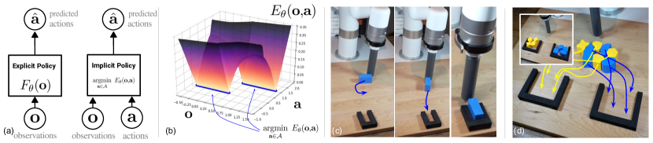
2 배경: 암시적 모델 학습 및 추론
우리는 암시적 모델을 최적화 문제 를 해결하기 위해 범용 함수 근사기 를 사용하여 추론을 수행하는 임의의 결합 으로 정의한다. 우리는 이러한 모델을 학습시키기 위해 에너지 기반 모델(EBM) 문헌의 기술을 사용한다. 샘플 데이터셋 과 회귀 경계 가 주어졌을 때, 학습은 배치 내의 각 샘플 에 대해 음의 대조군(negative counter-examples) 세트를 생성하고 InfoNCE 스타일 [18] 손실 함수를 채택하는 것으로 구성된다. 이 손실은 의 음의 로그 우도와 동일하며, 대조군은 를 추정하는 데 사용된다.
학습된 에너지 모델 을 사용하면, 을 해결하기 위해 확률적 최적화를 통해 암시적 추론을 수행할 수 있다. 다양한 접근 방식을 보여주기 위해 아래에서 논의되는 세 가지 다른 EBM 학습 및 추론 방법의 결과를 제시하지만, 모든 EBM 변형에 대한 포괄적인 비교는 본 논문의 범위를 벗어난다. 포괄적인 참고 자료는 [19]를 참조하라. 우리는 a) 도함수가 없는(샘플링 기반) 최적화 절차, b) 좌표 하강을 수행하는 도함수 없는 최적화 알고리즘의 자기회귀 변형, 또는 c) 학습 중 경사도 페널티 [20] 손실을 사용하는 경사 기반 랑주뱅(Langevin) 샘플링 [11, 12] 중 하나를 사용한다. 이러한 선택에 대한 설명과 비교는 부록을 참조하라.
3 암시적 모델 대 명시적 모델의 흥미로운 특성
명시적 모델 과 암시적 모델 을 고려해 보자. 여기서 와 은 거의 동일한 네트워크 아키텍처로 표현된다. 이 모델들을 비교하면서 우리는 다음을 조사한다: (i) 불연속점 근처에서 어떻게 작동하는가?, (ii) 다가 함수에 어떻게 적합하는가?, (iii) 어떻게 외삽(extrapolate)하는가? 와 모두에 대해 거의 동일한 ReLU 활성화 완전 연결 다층 퍼셉트론(MLP)을 사용하며, 유일한 차이점은 후자에서 의 추가 입력이 있다는 것이다. 명시적 "MSE" 모델은 평균 제곱 오차(MSE)로 학습되고, 명시적 "MDN" 모델은 혼합 밀도 네트워크(MDN) [21]이며, 암시적 "EBM" 모델은 로 학습되고 도함수 없는 최적화로 최적화된다. Figs. 2, 3은 여러 함수(Fig. 2) 및 다가 함수(Fig. 3)에 대해 학습된 모델을 보여준다. 이들 각각에 대해 우리는 불연속성, 다중 모드성 및/또는 외삽 영역을 조사한다.
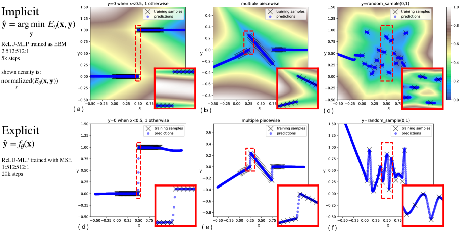
불연속성. 암시적 모델은 중간 아티팩트를 도입하지 않고 불연속성을 날카롭게 근사할 수 있는 반면(Fig. 2a), 명시적 모델(Fig. 2d)은 데이터에 연속 함수를 적합시키기 때문에 학습 샘플 사이의 모든 중간 값을 취한다. 불연속성의 빈도가 증가함에 따라, 암시적 모델 예측은 불연속성에서 날카롭게 유지되는 동시에 국부적 연속성을 존중하며, 학습 예제 사이의 일부 결정 경계까지 조각별 선형 외삽을 보여준다(Fig. 2a-c). 명시적 모델은 각 불연속성에 걸쳐 보간한다(Fig. 2d-f). 학습 데이터가 상관관계가 없고(즉, 무작위 노이즈) 규제가 없으면(Fig. 2c, Fig. 2f), 암시적 모델은 각 샘플 주변에 0이 아닌 세그먼트가 있긴 하지만 최근접 이웃(nearest-neighbors)과 유사한 동작을 보인다.
외삽(Extrapolation). 학습 데이터의 볼록 껍질(convex hull) 외부로 외삽하는 경우(Fig. 2a-f), 불연속적이거나 다가(multi-valued) 함수가 있더라도 암시적 모델은 종종 학습 데이터 영역의 경계에 가장 가까운 모델의 조각별 선형 부분에 대해 조각별 선형 외삽을 수행한다. 최근 연구 [22]에서는 명시적 모델이 선형 외삽을 수행하는 경향이 있음을 보여주었으나, 해당 분석은 참값(ground truth) 함수가 연속적이라고 가정한다.
다가 함수(Multi-valued functions). 단일 최적값을 식별하기 위해 을 사용하는 대신, 은 값의 집합을 반환할 수 있으며, 이는 분포에서 가능성이 높은 값을 샘플링하는 것으로 확률론적으로 해석되거나, 최적화에서 최소화기(minimizer)의 집합으로 해석될 수 있다(은 집합 값을 가짐). Fig. 3은 세 가지 다가 함수 예시에 대해 혼합 밀도 네트워크(MDN)로 학습된 ReLU-MLP와 EBM을 비교한다.
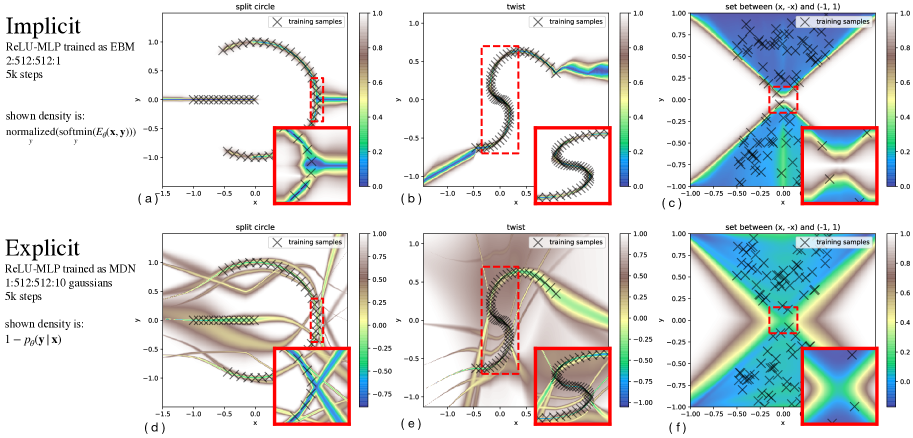
시각적 일반화(Visual Generalization) 시각운동 정책(visuomotor policy) 학습과 특히 관련하여, 우리는 고차원 이미지 입력을 연속적인 출력으로 변환할 때 외삽 능력에서 현저한 차이를 발견했다. Fig. 4은 합성곱 네트워크에 악명 높게 어려운 문제인 단순한 시각적 좌표 회귀 태스크[23]에서, CoordConv [23]를 사용하고 MSE로 학습된 Conv-MLP 모델 [24]이 학습 데이터의 볼록 껍질 외부로 외삽하는 데 얼마나 어려움을 겪는지 보여준다. 이는 [5, 25]의 발견과 일치한다. 반면, EBM으로서 후기 융합(late fusion)(Fig. 4b)을 통해 학습된 Conv-MLP는 단 몇 개의 학습 데이터 샘플만으로도 외삽을 잘 수행하여, 데이터가 적은 영역에서 1~2차수(orders of magnitude) 더 낮은 테스트 세트 오차를 달성한다(Fig. 4d). 이는 이 실험에는 존재하지 않는 다중 모드성(multi-modality)과는 별개의 방식으로 암시적 모델과 명시적 모델을 구별하는 추가적인 증거이다.
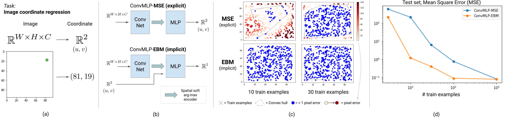
4 정책 학습 결과(Policy Learning Results)
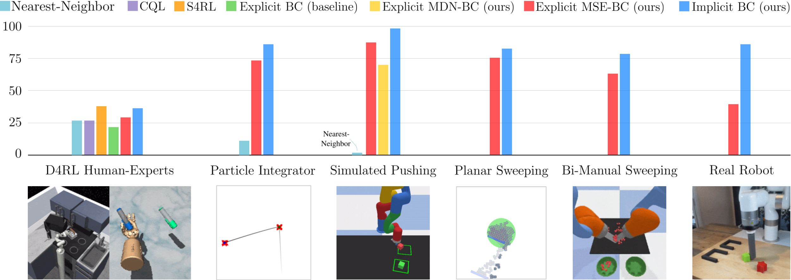
| image | human | unknown | multimodal | |
|---|---|---|---|---|
| Benchmark | input | demos | cardinality | solutions |
| D4RL Human-Experts | ✗ | ✓ | ✗ | ✗ |
| Particle Integrator | ✗ | ✗ | ✗ | ✗ |
| Block Pushing | ✓ | ✗ | ✗ | ✓ |
| Planar Sweeping | ✓ | ✓ | ✓ | ✓ |
| Bi-Manual Sweeping | ✓ | ✗ | ✓ | ✓ |
| Real Robot | ✓ | ✓ | ✗ | ✓ |
우리는 다양한 로봇 태스크 도메인(Fig. 5)에서 행동 복제(BC) 정책 학습을 위한 암시적 모델을 평가한다. 우리 실험의 목표는 세 가지이다: (i) 암시적 모델 또는 명시적 모델로 표현되었을 때 그 외에는 동일한 정책들의 성능을 비교하고, (ii) 우리의 모델들(암시적 및 명시적 모두)이 표준 태스크 세트에서 저자가 보고한 베이스라인과 얼마나 잘 비교되는지 테스트하며, (iii) 실제 로봇에서 시각적 관측을 통한 인간 데모로부터 효과적인 정책을 학습하는 데 암시적 모델이 사용될 수 있음을 보여주는 것이다. 다음 결과 및 토론은 태스크 도메인별로 정리되어 있으며, 각 도메인은 정책 학습에 필요한 고유한 속성 세트를 평가한다(Table 1). 모든 태스크는 불연속성을 특징으로 하며 어느 정도의 일반화(예: 외삽)를 요구한다.
D4RL [17]은 오프라인 강화학습을 위한 최신 벤치마크이다. 우리는 인간 데모의 오프라인 데이터셋이 제공되는 태스크 서브셋 전반에서 암시적(EBM) 및 명시적(MSE) 정책을 평가하며, 이는 단연 가장 어려운 태스크 세트이다. 놀랍게도, 우리는 우리의 암시적 및 명시적 정책 구현 모두가 벤치마크에 보고된 BC 베이스라인을 크게 능가하며, CQL [26] 및 S4RL [27]을 포함하여 현재까지 보고된 최첨단 오프라인 강화학습 결과와 경쟁력 있는 결과를 제공함을 발견했다. 보상 정보를 사용하는 가장 간단한 방법으로, 반환값(return)에 따라 정렬된 데모 중 상위 50%만 샘플링하도록 우선순위를 지정하면(보상 가중 회귀(RWR) [28]와 유사함), 흥미롭게도 암시적 정책이 일반적으로 향상되며 일부의 경우 새로운 최첨단 성능을 달성하는 반면, 명시적 모델의 경우 향상 폭이 적다. 이는 암시적 BC 정책이 명시적 BC 정책보다 데이터 품질을 더 가치 있게 평가함을 시사한다. 단순한 최근접 이웃(Nearest-Neighbor) 베이스라인(부록 참조)은 이러한 태스크에서 예상보다 나은 성능을 보이지만, 평균적으로 암시적 BC만큼 잘하지는 못한다.
| Baselines | Ours | ||||||||
| Explicit | Implicit | Explicit | Implicit | ||||||
| Method | Nearest- | BC | CQL [26] | S4RL [27] | BC (MSE) | BC (EBM) | BC (MSE) | BC (EBM) | |
| Neighbor | (from CQL [26]) | w/ RWR [28] | w/ RWR [28] | ||||||
| Uses data | |||||||||
| Domain | Task Name | ||||||||
| Franka | kitchen-complete | 1.92 0.00 | 1.4 | 1.8 | 3.08 | 1.76 0.04 | 3.37 0.19 | 1.22 0.18 | 3.37 0.01 |
| kitchen-partial | 1.70 0.00 | 1.4 | 1.9 | 2.99 | 1.69 0.02 | 1.45 0.35 | 1.86 0.26 | 2.18 0.05 | |
| kitchen-mixed | 1.46 0.00 | 1.9 | 2.0 | 2.15 0.06 | 1.51 0.39 | 2.03 0.06 | 2.25 0.14 | ||
| Adroit | pen-human | 1908.0 0.0 | 1121.9 | 1214.0 | 1419.6 | 2141 109 | 2586 65 | 2108 58.8 | 2446 207 |
| hammer-human | -85.2 0.0 | -82.4 | 300.2 | 496.2 | -38 25 | -133 26 | -35.1 45.1 | -9.3 45.5 | |
| door-human | 91.8 0.0 | -41.7 | 234.3 | 736.5 | 79 15 | 361 67 | 17.9 13.8 | 399 34 | |
| relocate-human | -3.8 0.0 | -5.6 | 2.0 | 2.1 | -3.5 1.1 | -0.1 2.4 | -3.7 0.3 | ||
D4RL 태스크 중 다수가 복잡한 고차원 행동 공간(최대 30차원)을 가지고 있지만, 우리가 관심 있는 태스크 속성(Table 1)의 전체 스펙트럼을 강조하지는 않는다. 다음 태스크들은 다른 속성들을 격리하거나, 매우 확률적인 역학(즉, 단일 점 접촉 블록 푸싱), 복잡한 다중 객체 상호작용(많은 미세 입자들), 조합적 복잡성과 같은 새로운 속성들을 도입한다.
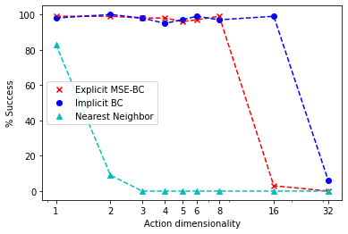
N차원 입자 적분기(N-D Particle Integrator)는 선형 역학을 가지지만 학습 데모를 생성하기 위해 불연속적인 오라클 정책이 사용되는 단순한 환경이다. 목표 조건 위치 부근에 도달하면(Fig. 5, 에 대해 표시됨), 정책은 두 번째 목표로 전환해야 한다. 이 환경을 연구하는 이점은 두 가지이다: (i) Table 1의 복잡한 속성이 없으므로 불연속성을 격리하여 연구할 수 있고, (ii) 이 단순한 환경을 차원으로 정의할 수 있다는 점이다. 데모 수를 일정하게 유지하면서 를 1차원에서 32차원까지 변화시켰을 때, 우리는 최대 16차원까지 95% 성공률의 암시적 정책을 학습할 수 있었던 반면, 명시적(MSE) 정책은 동일한 성공률로 8차원까지만 수행할 수 있음을 발견했다. 한편, 최근접 이웃 베이스라인은 일반화하지 못하며 1차원 태스크에서만 잘 수행된다(자세한 분석은 부록 참조).
| Method | Single Target, | Multi Target, | Single Target, |
|---|---|---|---|
| states | states | pixels | |
| EBM | 100 0 | 99.0 0.0 | 100 0 |
| MDN | 100 0 | 99.7 0.5 | 10.0 4.3 |
| MSE | 98.3 0.5 | 89.7 4.8 | 87.0 4.1 |
| Nearest-Neighbor | 4.0 0.0 | 0.0 0.0 | 4.3 1.9 |
시뮬레이션된 푸싱(Simulated Pushing)은 소형 원통형 말단 장치(end effector)가 장착된 PyBullet [29] 내의 시뮬레이션된 6자유도 로봇 xArm6으로 구성된다. 태스크는 테이블 위에 표시된 녹색 사각형으로 표시된 목표 구역으로 블록을 밀어 넣는 것이다. 우리는 두 가지 변형을 조사한다: (a) 단일 블록을 단일 목표 구역으로 밀기, 또는 (b) 블록을 두 번째 목표 구역으로도 밀기(다단계). 우리는 블록이 말단 장치에서 미끄러질 경우 푸싱 방향을 재조정하는 스크립트 정책을 사용하여 수집된 2,000개의 데모 데이터셋으로 학습된 암시적(EBM) 및 명시적(MSE 및 MDN [30, 31]) 정책을 두 변형 모두에서 평가한다. Table 3의 결과는 모든 학습 방법이 단일 목표 태스크에서 잘 수행되는 반면, MSE는 약간 더 긴 태스크 수평선(horizon)에서 어려움을 겪음을 보여준다. 이미지 기반 태스크의 경우, MDN은 MSE 및 EBM에 비해 크게 어려움을 겪는다. 단 0-4%의 성공률을 보인 최근접 이웃 베이스라인의 실패는 이 태스크에 일반화가 필요함을 보여준다.
평면 쓸기(Planar Sweeping) [32]는 에이전트(파란색 막대 형태)로 구성된 2D 환경으로, 무작위로 배치된 50~100개의 입자 더미를 녹색 목표 구역으로 밀어 넣는 것이 태스크이다. 에이전트는 3자유도(위치 2개, 방향 1개)를 가진다. 우리는 50개의 원격 조작 인간 데모로부터 암시적(EBM) 및 명시적(MSE) 정책을 학습시키고, 보지 못한 입자 구성의 에피소드에서 테스트한다. 이미지 기반 입력의 경우, 공간적 soft(arg)max 및 조밀한 특징에 대한 평균 풀링(average pooling)이라는 서로 다른 형태의 차원 축소를 사용하는 두 가지 유형의 인코더도 테스트한다(아키텍처 설명은 부록 참조). 상태 기반 입력의 경우, 에피소드마다 입자 수가 다르기 때문에 입자의 포즈를 평탄화(flatten)하고 벡터를 0으로 패딩(0-pad)하여 최대 입자 수일 때의 벡터 크기와 일치시킨다.
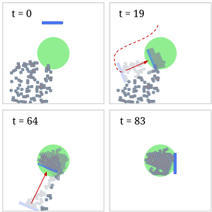
| # ResNet layers | ||||
|---|---|---|---|---|
| Method | Input & Encoder | 8 | 14 | 20 |
| EBM | image + softmax | 78.7 4.9 | 82.1 0.9 | 82.6 3.1 |
| EBM | image + pool | 78.0 2.2 | 76.5 1.0 | 74.2 1.9 |
| EBM | state | 28.7 0.8 | 29.2 0.5 | 28.9 0.2 |
| MSE | image + softmax | 62.9 5.0 | 51.4 8.9 | 56.6 5.2 |
| MSE | image + pool | 75.6 1.3 | 73.9 1.7 | 74.8 1.2 |
| MSE | state | 28.9 0.2 | 28.2 0.4 | 27.8 0.3 |
[table]그림 옆의 표
표 4의 결과(서로 다른 시드를 가진 3번의 학습 실행에 대한 평균)는 이미지 기반 EBM이 가장 우수한 MSE 아키텍처보다 7% 더 높은 성능을 보임을 시사한다. 흥미롭게도, 이미지 기반 EBM은 차원 축소를 위해 공간적 소프트맥스(spatial soft(arg)max)와 잘 시너지 효과를 내는 것으로 보이며, 이는 MSE 명시적 정책에 가장 잘 작동하는 풀링(pooling)과 대비된다. 두 경우 모두, 상태 관측(state observation)을 입력으로 사용하는 것은 이미지 픽셀 입력에 비해 성능이 좋지 않다. 이는 입자들이 이미지 공간에서는 대칭성을 가지지만, 포즈 벡터로 관측될 때는 대칭성을 가지지 않기 때문일 가능성이 높다.
시뮬레이션 양팔 쓸기(Simulated Bi-Manual Sweeping)는 주걱 모양의 말단 효과기(end effector)가 장착된 두 대의 KUKA IIWA 로봇 팔로 구성된다. 작업은 작업 공간에서 무작위로 배치된 입자들을 떠서 두 개의 그릇에 균등하게 채워지도록 운반하는 것이다. 입자를 성공적으로 떠서 운반하려면 두 팔 사이의 정밀한 협조가 필요하다(예: 그릇으로 운반하는 동안 입자가 떨어지지 않도록 하는 등). 행동 공간은 12자유도(arm당 6자유도 데카르트 좌표계)이며, 각 에피소드는 10Hz로 기록된 700단계로 구성된다. 시뮬레이션 카메라의 원근 RGB 이미지가 시각적 입력으로 사용되며, 현재 말단 효과기 포즈가 상태 입력으로 함께 사용된다. 이 작업은 많은 모드 변화와 불연속성(뜨기에서 들어 올리기로, 들어 올리기에서 운반하기로의 전환, 그리고 어느 그릇으로 운반할지 결정하는 것)이 특징이다. 이 작업의 EBM 및 MSE 정책은 평면 쓸기 작업에서 가장 성능이 좋았던 이미지 인코더를 사용한다. 표 5에 나타난 바와 같이, 우리의 결과는 EBM이 MSE보다 14% 우수한 성능을 보임을 보여준다.
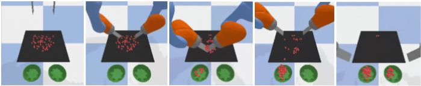
| Method | Input and Encoder | Success % |
|---|---|---|
| EBM | image + softmax | 78.2 2.7 |
| MSE | image + pool | 63.9 7.7 |
[table]그림 옆의 표
실제 로봇 조작(Real Robot Manipulation)에서는 xArm6 로봇에 원통형 말단 효과기를 사용하여(그림 9a), 4가지 실제 조작 밀기 작업에서 암시적 BC 및 명시적 BC 정책을 평가한다: 1) 빨간색 블록과 초록색 블록을 지정된 대상 고정구에 밀어 넣기, 2) 빨간색 및 초록색 블록을 순서에 상관없이 두 대상 고정구 중 하나에 밀어 넣기, 3) 파란색 블록을 좁은(1mm 공차) 대상 고정구에 정밀하게 밀어 넣고 삽입하기, 4) 4개의 파란색 블록과 4개의 노란색 블록을 서로 다른 대상으로 분류하기. 관측 입력은 5Hz의 원시 원근 RGB 이미지뿐이며, 작업 시간은 최대 60초이고 원격 조종 데모를 사용한다.
| Task | Push-Red-then-Green | Push-Red/Green-Multimodal | Insert-Blue | Sort-Blue-from-Yellow | ||
|---|---|---|---|---|---|---|
| # demos | 95 | 410 | 223 | 502 | ||
| Avg. lengths std. | 19.1 2.5 | 19.0 3.1 | 22.1 5.5 | 45.2 8.2 | ||
| [min, max] (seconds) | [14.2, 25.1] | [11.8, 28.1] | [13.0, 43.5] | [25.8, 60.5] | ||
| Success criterion | 1.0 if both blocks in target | 1.0 if both blocks in target |
|
for each correct block in target | ||
| Success avg. (%) | ||||||
| Implicit BC (EBM) | 85.0 5.0 | 88.3 7.6 | 83.3 3.8 | 48.3 4.6 | ||
| Explicit BC (MSE) | 35.0 18.0 | 55.0 18.0 | 6.7 9.4 | 19.6 1.5 |
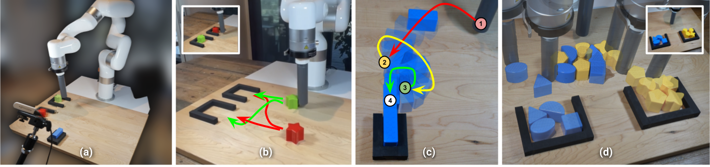
네 가지 작업 모두에서 암시적 정책이 명시적 베이스라인에 비해 현저히 높은 성능을 보이는 것을 관찰할 수 있다. 이는 블록을 제자리에 미세하게 밀어 넣되 너무 멀리 가지 않도록 하기 위해 고도의 불연속적인 행동이 요구되는 밀기 및 방향 삽입 작업(Insert Blue)에서 특히 두드러진다(그림 9c). 이 작업에서 암시적 BC 정책은 명시적 BC 정책보다 한 자릿수(order of magnitude) 더 높은 성공률을 보인다. 특히 분류 작업(Sort-Blue-From-Yellow, 그림 9d)은 우리 모델의 일반화 능력을 한계까지 밀어붙이려는 시도였으며, 암시적 정책이 2.4배 더 높은 성공률을 보이는 것을 확인했다. 이러한 실험 결과는 각 작업 및 각 정책 유형에 대해 3개의 서로 다른 모델의 평균값이다. 다중 모드 변형을 포함한 빨간색/초록색 밀기 작업(그림 9b) 역시 암시적 정책에서 눈에 띄게 높은 성공률을 보여준다. 이러한 실제 로봇 결과는 첨부된 비디오에서 가장 잘 확인할 수 있다.
5 이론적 통찰: 암시적 모델을 통한 보편적 근사
이전 섹션들에서 우리는 암시적 모델이 불연속성을 처리하는 능력을 실험적으로 입증했으며(섹션 3), 이것이 암시적 BC 정책의 강력한 성능에 대한 이유 중 하나일 것이라고 가설을 세웠다(섹션 4). 이제 우리가 던지는 두 가지 이론적 질문은 다음과 같다: (i) 분석적인 가 주어졌을 때 암시적 모델에 의해 표현될 수 있는 함수 클래스가 무엇인지에 대해 증명 가능한 개념이 존재하는가? 그리고 (ii) 데이터로부터 학습된 에너지 함수가 임의의 함수를 근사하는 데 항상 비제로(non-zero) 오차를 가질 것으로 예상된다는 점을 고려할 때, 과 의 스퓨리어스 피크(spurious peak)의 결합으로 인해 발생하는 큰 행동 변화(behaviour shift)의 추론 위험이 존재하는가? 최근 연구 [33]는 넓은 클래스의 함수(즉, 유한한 다항식 부등식으로 정의되는 함수)가 을 표현하기 위해 SOS 다항식을 사용하는 에 의해 암시적으로 근사될 수 있음을 보여주었다. 여기서 우리는 임의의 연속 함수 근사기(예: 심층 ReLU-MLP 네트워크)로 표현되는 을 가진 암시적 모델의 경우, 가 다가 함수(multi-valued function) 및 불연속 함수를 포함하는 더 큰 함수 집합을 임의의 정확도로(정리 2) 표현할 수 있음을 보여준다(정리 1). 이러한 결과는 아래에 공식적으로 기술되어 있으며, 증명은 부록에 있다.
Theorem 1.
의 그래프가 닫혀 있는 임의의 집합값 함수(set-valued function) 에 대하여, 모든 에 대해 이 성립하도록 하는 연속 함수 가 존재한다.
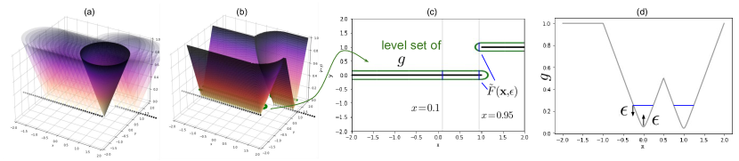
.
Theorem 2.
임의의 집합값 함수 에 대하여, 임의로 작은 유계 오차 을 가진 어떤 연속 함수 근사기 에 의해 근사될 수 있는 함수 이 존재하여, 가 에서 의 그래프까지의 거리가 보다 작다는 보장을 제공한다.
실용적인 관점에서, 임의로 작거나 큰 립시츠(Lipschitz) 상수를 가진 명시적 함수(정리 1 및 2의 )는 유계 립시츠 상수를 가진 암시적 함수에 의해 근사될 수 있다(자세한 논의는 부록 참조). 이는 암시적 함수가 일반화 문제를 일으킬 수 있는 함수 근사기 내의 큰 그래디언트 없이도, 가파르거나 불연속적인 명시적 함수를 근사할 수 있음을 의미한다. 이는 근사 대상 함수의 큰 그래디언트와 일치해야만 하는 명시적 연속 함수 근사기의 경우에는 해당되지 않는다. 다가(multi-valued) 특성과 불연속성 처리 능력 모두에서, 암시적 모델의 근사 능력은 명시적 모델보다 분명히 우수하다. 시각적 직관은 그림 10을 참조하고, 더 자세한 논의는 부록을 참조하라.
6 관련 연구
에너지 기반 모델, 암시적 학습. 에너지 기반 모델(Energy-Based Models, EBM)에 대한 리뷰는 LeCun 등 [10] 및 Song & Kingma [19]에서 찾아볼 수 있다. Du & Mordatch [12]는 학습 및 암시적 추론을 위한 Langevin MCMC [11] 샘플링을 제안하였으며, 구성성(compositionality)과 분포 외 일반화(out-of-distribution generalization) 및 장기 시퀀스 예측(long-horizon sequential prediction)과 같은 실험적 결과를 포함하여 암시적 생성의 여러 강점을 주장했다. 행동의 에너지 기반 학습을 위한 일반적인 프레임워크 또한 [34]에 제시되어 있다. 응용 분야에서 에너지 기반 모델은 최근 다양한 컴퓨터 비전 작업 [35, 36]뿐만 아니라 이미지 및 텍스트 생성 [12, 37, 38]과 같은 생성 모델링 작업을 포함한 여러 도메인에서 최첨단(state-of-the-art) 결과를 보여주었다. 다른 많은 연구에서도 암시적 레이어(implicit layers)를 조사하는 연구 [39, 40, 41, 42]를 포함하여 학습에서 암시적 함수의 개념을 사용하는 방법을 조사해 왔다. 암시적 표현(implicit representations)에서의 기하학적 표현 학습(geometry representation learning)에 대한 관심도 급증하고 있다 [43, 44, 45, 46]. 로봇 공학에서는 불연속적인 접촉 역학(discontinuous contact dynamics)을 모델링하기 위해 암시적 모델이 개발되었다 [47].
정책 학습에서의 에너지 기반 모델. 강화 학습(Reinforcement Learning, RL)에서 [13]은 EBM 공식을 정책 표현으로 사용한다. 다른 최근 연구 [14]는 모델 기반 계획(model-based planning) 프레임워크에서 EBM을 사용하거나, 모방 학습(imitation learning) [48]에서 온폴리시(on-policy) 알고리즘과 함께 EBM을 사용한다. 또한 최근 RL 연구의 트렌드는 EBM을 전체 알고리즘의 일부로 활용하는 것이다(예: [15, 16]).
모방 학습을 통한 정책 학습. 행동 복제(Behavioral Cloning, BC) [1] 외에도, 머신러닝 및 로봇 공학 분야는 모방 학습 [49, 50, 51]에서 종종 추가적인 정보를 필요로 하는 방식으로 다양한 추가적 접근법을 탐구해 왔다. 한 가지 경로는 학습된 정책의 온폴리시 데이터를 수집하고, 온폴리시 강화 학습(RL) [52, 53, 54]을 수행하기 위해 보상(reward)을 라벨링하거나 전문가가 행동(action)을 라벨링하는 것 [2]이다. GAIL [7]과 같은 분포 매칭(distribution-matching) 알고리즘은 라벨링이 필요하지 않지만, 수백만 번의 온폴리시 환경 상호작용이 필요할 수 있다. ValueDice [55]와 같은 알고리즘은 샘플 효율적인 오프폴리시(off-policy) 환경에서 분포 매칭을 구현하지만, 이미지 관측이나 고자유도 행동 공간에서는 검증되지 않았다. BC를 넘어 더 많은 정보를 사용하는 또 다른 경로는 오프폴리시 데이터에 보상을 라벨링하는 것이며, 이는 오프라인 RL 분야 [17]의 핵심 연구 주제이다. 이러한 방향들은 모두 훌륭한 아이디어이다. 그러나 완전히 인식되지 못했을 수 있는 발견은, 어떤 경우에는 가장 단순한 형태의 BC조차도 놀라울 정도로 좋은 결과를 낼 수 있다는 점이다. 오프라인 RL 벤치마크에서, 이전 연구들의 BC 구현은 이미 오프라인 RL 알고리즘과 상당히 경쟁력 있는 결과를 보여준다 [17, 56]. 실제 로봇 공학 연구에서 BC는 정책 학습에 널리 사용되어 왔다 [4, 30, 5, 25]. 아마도 BC의 성공은 그 단순함(simplicity)에서 기인할 것이다. BC는 데이터 수집 요구사항이 가장 낮고(보상 라벨이나 온폴리시 데이터가 필요 없음), 데이터 효율적일 수 있으며 [5, 25], 구현하기 가장 간단하고 튜닝하기 가장 쉽다(RL 기반 방법에 비해 하이퍼파라미터가 적음).
불연속 함수의 근사. 신경망의 보편적 근사(Universal Approximation)에 관한 Cybenko [57] 등의 기초적인 결과는 머신러닝 연구와 응용을 안내하는 데 근본적인 영향을 미쳤다. 함수 근사 문헌 등에서는 불연속 함수를 근사하기 위해 일반적으로 신경망을 사용하지 않는 다양한 접근법 [58, 59, 60, 61]이 개발되어 왔다. 또한 로봇의 현상 모델링 응용에 영감을 받아, [62]는 신경망으로 불연속 함수를 근사하는 이론을 개발하지만, 이 방법은 불연속점의 위치에 대한 사전 지식을 필요로 한다. 본 연구는 잘 알려지고 널리 적용되는 연속 신경망의 결과를 기반으로 하지만, 과의 결합을 통해 불연속적인 다가 함수(set-valued functions)에 대해서도 보편적 근사의 개념을 제공한다.
7 결론
본 논문에서 우리는 지도 모방 학습을 추론 시간 암시적 회귀를 사용하는 조건부 에너지 기반 모델링 문제로 재구성하는 것이 기존의 명시적 정책 베이스라인보다 종종 훨씬 더 우수한 성능을 보임을 보였다. 이는 고차원 행동 공간(D4RL 인간 전문가 작업에서 최대 30차원), 시각적 관측, 그리고 실제 환경에서의 작업을 포함한다. 한계점 측면에서 명시적 모델과의 주요 비교점은 학습과 추론 모두에서 일반적으로 더 많은 계산량이 필요하다는 것이다(비교는 부록 참조). 그러나 우리는 실제 환경에서 실시간 비전 기반 제어를 위해 암시적 정책을 실행할 수 있음을 보여주었으며, 학습 시간은 오프라인 RL 알고리즘에 비해 적당한 수준이다. 암시적 모델의 사용을 더욱 독려하기 위해, 우리는 에너지 기반 모델 특성에 대한 직관적인 분석을 제시하고, 우리가 아는 한 문헌에서 논의되지 않은 불연속성을 정확하게 모델링하는 능력을 포함한 여러 잠재적 이점을 강조했다. 마지막으로, 우리의 결과를 이론적으로 뒷받침하기 위해 명시적 모델의 보편적 근사와는 구별되는 암시적 모델의 보편적 근사 개념을 개발했다.
감사의 글
저자들은 프로젝트 방향에 대한 조언을 아끼지 않은 Vikas Sindwhani, 로봇 소프트웨어 인프라를 지원해 준 Steve Xu, Robert Baruch, Arnab Bose, ML 인프라를 지원해 준 Jake Varley, Alexa Greenberg, 그리고 유익한 피드백과 토론을 나누어 준 Kamyar Ghasemipour, Jon Barron, Eric Jang, Stephen Tu, Sumeet Singh, Jean-Jacques Slotine, Anirudha Majumdar, Vincent Vanhoucke에게 감사를 표한다.
References
- Pomerleau [1989] D. A. Pomerleau. Alvinn: An autonomous land vehicle in a neural network. Technical report, Carnegie Melon Univ. Pittsburgh, PA. Artificial Intelligence and Psychology., 1989.
- Ross et al. [2011] S. Ross, G. Gordon, and D. Bagnell. A reduction of imitation learning and structured prediction to no-regret online learning. In Proceedings of the fourteenth international conference on artificial intelligence and statistics, pages 627–635. JMLR Workshop and Conference Proceedings, 2011.
- Tu et al. [2021] S. Tu, A. Robey, T. Zhang, and N. Matni. On the sample complexity of stability constrained imitation learning. arXiv preprint arXiv:2102.09161, 2021.
- Zhang et al. [2018] T. Zhang, Z. McCarthy, O. Jow, D. Lee, X. Chen, K. Goldberg, and P. Abbeel. Deep imitation learning for complex manipulation tasks from virtual reality teleoperation. In 2018 IEEE International Conference on Robotics and Automation (ICRA), pages 5628–5635. IEEE, 2018.
- Florence et al. [2019] P. Florence, L. Manuelli, and R. Tedrake. Self-supervised correspondence in visuomotor policy learning. IEEE Robotics and Automation Letters, 5(2):492–499, 2019.
- Zeng et al. [2020] A. Zeng, S. Song, J. Lee, A. Rodriguez, and T. Funkhouser. Tossingbot: Learning to throw arbitrary objects with residual physics. IEEE Transactions on Robotics, 2020.
- Ho and Ermon [2016] J. Ho and S. Ermon. Generative adversarial imitation learning. Advances in neural information processing systems, 29:4565–4573, 2016.
- Abbeel and Ng [2004] P. Abbeel and A. Y. Ng. Apprenticeship learning via inverse reinforcement learning. In Proceedings of the twenty-first international conference on Machine learning, 2004.
- Ho et al. [2016] J. Ho, J. Gupta, and S. Ermon. Model-free imitation learning with policy optimization. In International Conference on Machine Learning. PMLR, 2016.
- LeCun et al. [2006] Y. LeCun, S. Chopra, R. Hadsell, M. Ranzato, and F. Huang. A tutorial on energy-based learning. Predicting structured data, 1(0), 2006.
- Welling and Teh [2011] M. Welling and Y. W. Teh. Bayesian learning via stochastic gradient langevin dynamics. In Proceedings of the 28th international conference on machine learning (ICML-11), pages 681–688. Citeseer, 2011.
- Du and Mordatch [2019] Y. Du and I. Mordatch. Implicit generation and modeling with energy based models. Advances in Neural Information Processing Systems, 32:3608–3618, 2019.
- Haarnoja et al. [2017] T. Haarnoja, H. Tang, P. Abbeel, and S. Levine. Reinforcement learning with deep energy-based policies. In International Conference on Machine Learning, pages 1352–1361. PMLR, 2017.
- Du et al. [2020] Y. Du, T. Lin, and I. Mordatch. Model-based planning with energy-based models. In L. P. Kaelbling, D. Kragic, and K. Sugiura, editors, Proceedings of the Conference on Robot Learning, volume 100 of Proceedings of Machine Learning Research, pages 374–383. PMLR, 30 Oct–01 Nov 2020.
- Kostrikov et al. [2021] I. Kostrikov, J. Tompson, R. Fergus, and O. Nachum. Offline reinforcement learning with fisher divergence critic regularization. arXiv preprint arXiv:2103.08050, 2021.
- Nachum and Yang [2021] O. Nachum and M. Yang. Provable representation learning for imitation with contrastive fourier features. arXiv preprint arXiv:2105.12272, 2021.
- Fu et al. [2020] J. Fu, A. Kumar, O. Nachum, G. Tucker, and S. Levine. D4rl: Datasets for deep data-driven reinforcement learning. arXiv preprint arXiv:2004.07219, 2020.
- Oord et al. [2018] A. v. d. Oord, Y. Li, and O. Vinyals. Representation learning with contrastive predictive coding. arXiv preprint arXiv:1807.03748, 2018.
- Song and Kingma [2021] Y. Song and D. P. Kingma. How to train your energy-based models. arXiv preprint arXiv:2101.03288, 2021.
- Jolicoeur-Martineau and Mitliagkas [2021] A. Jolicoeur-Martineau and I. Mitliagkas. Gradient penalty from a maximum margin perspective. arXiv preprint arXiv:1910.06922, 2021.
- Bishop [1994] C. M. Bishop. Mixture density networks. Neural Computing Research Group Report, 1994.
- Xu et al. [2020] K. Xu, M. Zhang, J. Li, S. S. Du, K.-i. Kawarabayashi, and S. Jegelka. How neural networks extrapolate: From feedforward to graph neural networks. arXiv preprint arXiv:2009.11848, 2020.
- Liu et al. [2018] R. Liu, J. Lehman, P. Molino, F. Petroski Such, E. Frank, A. Sergeev, and J. Yosinski. An intriguing failing of convolutional neural networks and the coordconv solution. Advances in Neural Information Processing Systems, 31, 2018.
- Levine et al. [2016] S. Levine, C. Finn, T. Darrell, and P. Abbeel. End-to-end training of deep visuomotor policies. The Journal of Machine Learning Research (JMLR), 2016.
- Zeng et al. [2020] A. Zeng, P. Florence, J. Tompson, S. Welker, J. Chien, M. Attarian, T. Armstrong, I. Krasin, D. Duong, V. Sindhwani, et al. Transporter networks: Rearranging the visual world for robotic manipulation. In Conference on Robot Learning, 2020.
- Kumar et al. [2020] A. Kumar, A. Zhou, G. Tucker, and S. Levine. Conservative q-learning for offline reinforcement learning. Advances in Neural Information Processing Systems (NeurIPS), 2020.
- Sinha and Garg [2021] S. Sinha and A. Garg. S4rl: Surprisingly simple self-supervision for offline reinforcement learning. arXiv preprint arXiv:2103.06326, 2021.
- Peters and Schaal [2007] J. Peters and S. Schaal. Reinforcement learning by reward-weighted regression for operational space control. In Proceedings of the 24th international conference on Machine learning, pages 745–750, 2007.
- Coumans and Bai [2016] E. Coumans and Y. Bai. Pybullet, a python module for physics simulation for games, robotics and machine learning. GitHub Repository, 2016.
- Rahmatizadeh et al. [2018] R. Rahmatizadeh, P. Abolghasemi, L. Bölöni, and S. Levine. Vision-based multi-task manipulation for inexpensive robots using end-to-end learning from demonstration. In 2018 IEEE international conference on robotics and automation (ICRA), pages 3758–3765. IEEE, 2018.
- Ha and Schmidhuber [2018] D. Ha and J. Schmidhuber. Recurrent world models facilitate policy evolution. In Advances in Neural Information Processing Systems 31, pages 2451–2463, 2018.
- Suh and Tedrake [2020] H. Suh and R. Tedrake. The surprising effectiveness of linear models for visual foresight in object pile manipulation. Workshop on Algorithmic Foundations of Robotics (WAFR), 2020.
- Marx et al. [2021] S. Marx, E. Pauwels, T. Weisser, D. Henrion, and J. B. Lasserre. Semi-algebraic approximation using christoffel–darboux kernel. Constructive Approximation, pages 1–39, 2021.
- Mordatch [2018] I. Mordatch. Concept learning with energy-based models. arXiv preprint arXiv:1811.02486, 2018.
- Gustafsson et al. [2020a] F. K. Gustafsson, M. Danelljan, G. Bhat, and T. B. Schön. Energy-based models for deep probabilistic regression. In European Conference on Computer Vision, pages 325–343. Springer, 2020a.
- Gustafsson et al. [2020b] F. K. Gustafsson, M. Danelljan, R. Timofte, and T. B. Schön. How to train your energy-based model for regression. BMVC, 2020b.
- Du et al. [2021] Y. Du, S. Li, B. J. Tenenbaum, and I. Mordatch. Improved contrastive divergence training of energy based models. In Proceedings of the 38th International Conference on Machine Learning (ICML-21), 2021.
- Deng et al. [2020] Y. Deng, A. Bakhtin, M. Ott, A. Szlam, and M. Ranzato. Residual energy-based models for text generation. ICLR, 2020.
- Amos and Kolter [2017] B. Amos and J. Z. Kolter. Optnet: Differentiable optimization as a layer in neural networks. In International Conference on Machine Learning, pages 136–145. PMLR, 2017.
- Niculae et al. [2018] V. Niculae, A. Martins, M. Blondel, and C. Cardie. Sparsemap: Differentiable sparse structured inference. In International Conference on Machine Learning, pages 3799–3808. PMLR, 2018.
- Wang et al. [2019] P.-W. Wang, P. Donti, B. Wilder, and Z. Kolter. Satnet: Bridging deep learning and logical reasoning using a differentiable satisfiability solver. In International Conference on Machine Learning, pages 6545–6554. PMLR, 2019.
- Bai et al. [2019] S. Bai, J. Z. Kolter, and V. Koltun. Deep equilibrium models. NeurIPS 2019, 2019.
- Park et al. [2019] J. J. Park, P. Florence, J. Straub, R. Newcombe, and S. Lovegrove. Deepsdf: Learning continuous signed distance functions for shape representation. In Proceedings of the IEEE/CVF Conference on Computer Vision and Pattern Recognition, pages 165–174, 2019.
- Mescheder et al. [2019] L. Mescheder, M. Oechsle, M. Niemeyer, S. Nowozin, and A. Geiger. Occupancy networks: Learning 3d reconstruction in function space. In Proceedings of the IEEE/CVF Conference on Computer Vision and Pattern Recognition, pages 4460–4470, 2019.
- Chen and Zhang [2019] Z. Chen and H. Zhang. Learning implicit fields for generative shape modeling. In Proceedings of the IEEE/CVF Conference on Computer Vision and Pattern Recognition, pages 5939–5948, 2019.
- Saito et al. [2019] S. Saito, Z. Huang, R. Natsume, S. Morishima, A. Kanazawa, and H. Li. Pifu: Pixel-aligned implicit function for high-resolution clothed human digitization. In Proceedings of the IEEE/CVF International Conference on Computer Vision, pages 2304–2314, 2019.
- Pfrommer et al. [2020] S. Pfrommer, M. Halm, and M. Posa. Contactnets: Learning discontinuous contact dynamics with smooth, implicit representations. arXiv preprint arXiv:2009.11193, 2020.
- Liu et al. [2020] M. Liu, T. He, M. Xu, and W. Zhang. Energy-based imitation learning. arXiv preprint arXiv:2004.09395, 2020.
- Osa et al. [2018] T. Osa, J. Pajarinen, G. Neumann, J. A. Bagnell, P. Abbeel, and J. Peters. An algorithmic perspective on imitation learning. arXiv preprint arXiv:1811.06711, 2018.
- Peng et al. [2018] X. B. Peng, P. Abbeel, S. Levine, and M. van de Panne. Deepmimic: Example-guided deep reinforcement learning of physics-based character skills. ACM Transactions on Graphics (TOG), 37(4):1–14, 2018.
- Peng et al. [2021] X. B. Peng, Z. Ma, P. Abbeel, S. Levine, and A. Kanazawa. Amp: Adversarial motion priors for stylized physics-based character control. arXiv preprint arXiv:2104.02180, 2021.
- Atkeson and Schaal [1997] C. G. Atkeson and S. Schaal. Robot learning from demonstration. In ICML, volume 97, pages 12–20. Citeseer, 1997.
- Ng et al. [2000] A. Y. Ng, S. J. Russell, et al. Algorithms for inverse reinforcement learning. In Icml, volume 1, page 2, 2000.
- Rajeswaran et al. [2017] A. Rajeswaran, V. Kumar, A. Gupta, G. Vezzani, J. Schulman, E. Todorov, and S. Levine. Learning complex dexterous manipulation with deep reinforcement learning and demonstrations. arXiv preprint arXiv:1709.10087, 2017.
- Kostrikov et al. [2020] I. Kostrikov, O. Nachum, and J. Tompson. Imitation learning via off-policy distribution matching. In International Conference on Learning Representations, 2020.
- Gulcehre et al. [2020] C. Gulcehre, Z. Wang, A. Novikov, T. L. Paine, S. G. Colmenarejo, K. Zolna, R. Agarwal, J. Merel, D. Mankowitz, C. Paduraru, et al. Rl unplugged: Benchmarks for offline reinforcement learning. arXiv preprint arXiv:2006.13888, 2020.
- Cybenko [1989] G. Cybenko. Approximation by superpositions of a sigmoidal function. Mathematics of control, signals and systems, 2(4):303–314, 1989.
- Butzer et al. [1987] P. Butzer, S. Ries, and R. Stens. Approximation of continuous and discontinuous functions by generalized sampling series. Journal of approximation theory, 50(1):25–39, 1987.
- Tampos et al. [2012] A. L. Tampos, J. E. C. Lope, and J. S. Hesthaven. Accurate reconstruction of discontinuous functions using the singular pade-chebyshev method. IAENG International Journal of Applied Mathematics, 42(ARTICLE):242–249, 2012.
- Kvernadze [2010] G. Kvernadze. Approximation of the discontinuities of a function by its classical orthogonal polynomial fourier coefficients. Mathematics of computation, 79(272):2265–2285, 2010.
- Stella et al. [2016] E. Stella, C. Ladera, and G. Donoso. A very accurate method to approximate discontinuous functions with a finite number of discontinuities. arXiv preprint arXiv:1601.05132, 2016.
- Selmic and Lewis [2002] R. R. Selmic and F. L. Lewis. Neural-network approximation of piecewise continuous functions: application to friction compensation. IEEE transactions on neural networks, 13(3):745–751, 2002.
- De Boer et al. [2005] P.-T. De Boer, D. P. Kroese, S. Mannor, and R. Y. Rubinstein. A tutorial on the cross-entropy method. Annals of operations research, 134(1):19–67, 2005.
- Nash and Durkan [2019] C. Nash and C. Durkan. Autoregressive energy machines. In International Conference on Machine Learning, pages 1735–1744. PMLR, 2019.
- Grathwohl et al. [2019] W. Grathwohl, K.-C. Wang, J.-H. Jacobsen, D. Duvenaud, M. Norouzi, and K. Swersky. Your classifier is secretly an energy based model and you should treat it like one. arXiv preprint arXiv:1912.03263, 2019.
- Miyato et al. [2018] T. Miyato, T. Kataoka, M. Koyama, and Y. Yoshida. Spectral normalization for generative adversarial networks. In International Conference on Learning Representations, 2018.
- Bingham and Mannila [2001] E. Bingham and H. Mannila. Random projection in dimensionality reduction: applications to image and text data. In Proceedings of the seventh ACM SIGKDD international conference on Knowledge discovery and data mining, pages 245–250, 2001.
- Srivastava et al. [2014] N. Srivastava, G. Hinton, A. Krizhevsky, I. Sutskever, and R. Salakhutdinov. Dropout: a simple way to prevent neural networks from overfitting. The journal of machine learning research, 15(1):1929–1958, 2014.
- He et al. [2016a] K. He, X. Zhang, S. Ren, and J. Sun. Identity mappings in deep residual networks. In European conference on computer vision, pages 630–645. Springer, 2016a.
- He et al. [2016b] K. He, X. Zhang, S. Ren, and J. Sun. Deep residual learning for image recognition. IEEE Conference on Computer Vision and Pattern Recognition (CVPR), 2016b.
암시적 행동 복제(Implicit Behavioral Cloning) 부록
부록 A 기여도 진술
지면 제약으로 인해 본문에 포괄적인 기여도 진술을 포함하지 못했으나, 명확성을 위해 여기에 포함한다.
-
1.
우리는 행동 복제를 조건부 에너지 기반 모델링(EBM) 문제로 캐스팅하고, 샘플링 기반 또는 경사하강법 기반 최적화를 통해 추론을 수행하는 모방 학습을 위한 새롭고 간단한 방법인 암시적 행동 복제(Implicit BC)를 제시한다.
-
2.
우리는 실제 로봇 실험에서 암시적 BC를 검증하며, 오직 이미지만을 입력으로 사용하고 인간의 시연 데이터만을 학습 데이터로 제공하여 물리 로봇이 여러 엔드투엔드(end-to-end)의 접촉이 많은 푸시 작업(정밀 삽입 및 다중 물품 분류 포함)을 수행하는 것을 보여준다. 암시적 BC는 모든 실제 작업에서 명시적 BC 베이스라인보다 훨씬 더 나은 성능을 보여주며, 특히 정밀 삽입 작업에서는 성능이 10배(order-of-magnitude) 향상되었다. 분류 작업에서는 모델이 복잡한 다중 객체 충돌이 발생하는 접촉이 많고 조합적인 작업에 대해 최대 60초의 장기 수평선(horizon)을 해결할 수 있음을 보여준다.
-
3.
우리는 동일한 코드베이스의 비교 가능한 명시적 모델 및 표준 D4RL 벤치마크의 인간 전문가 작업에 대해 저자가 보고한 정량적 결과 모두와 암시적 BC를 비교하는 광범위한 시뮬레이션 실험을 제시한다. 우리는 보상 정보를 전혀 사용하지 않음에도 불구하고, 우리의 명시적 BC 및 암시적 BC 모델 모두가 인간이 제공한 시연이 있는 D4RL 작업에서 경쟁력 있거나 최첨단 성능을 제공함을 발견했다. 모든 작업의 평균을 내었을 때, 암시적 BC가 우리의 가장 우수한 명시적 BC 모델보다 성능이 뛰어남을 확인했다.
-
4.
우리는 간단한 1D-1D 예제에서 암시적 모델의 특성을 분석하고, (i) 불연속점에서의 행동 및 (ii) 외삽(extrapolation)에서의 행동을 포함하여 생성 모델링 커뮤니티에 잘 알려지지 않았다고 생각되는 암시적 모델의 측면들을 강조한다.
- 5.
부록 B 에너지 기반 모델 학습 및 암시적 추론 세부사항
우리의 결과는 에너지 기반 모델(EBM) 학습에 결정적으로 의존하지만, 우리가 사용하는 특정 방법들을 우리의 주요 기여로 간주하지는 않는다(목록은 섹션 A 참조). 그렇기는 하지만, 간단한 함수 피팅 작업과 정책 학습 작업 모두에서 조건부 EBM을 학습시킨 상당한 경험을 바탕으로, 연구 커뮤니티에 구체적인 방법들을 상세히 설명하는 것이 유용할 것이라 믿는다. 우리의 목표는 가능한 한 단순함을 강조하여 더 많은 사람들이 명시적 회귀 대신 암시적 에너지 기반 회귀를 사용하도록 권장하는 것이다. 먼저 도함수가 필요 없는 최적화(derivative-free optimization)를 사용하는 접근법을 검토한 다음, 자기회귀(autoregressive) 버전, 그리고 Langevin 경사 기반 샘플링을 사용하는 접근법을 검토한다. 각각에 대해 (i) 모델을 학습시키는 방법과 (ii) 모델로 추론을 수행하는 방법에 대해 논의한다. EBM 학습에 대한 더 포괄적인 개요는 [19]을 참조하라. 학습 및 추론을 위한 코드도 공개할 예정이다.
모든 방법에서 및 을 계산하기 위해, 우리는 (1) 훈련 데이터에 대해 차원별 최소값과 최대값을 구하고, (2) 각 측면에 일반적으로 0.05()의 작은 버퍼를 추가한 다음, (3) 이 최소값 및 최대값을 환경에서 허용하는 최소/최대값으로 클리핑(clip)한다. 주어진 차원에 대해 환경이 허용하는 값의 전체 범위를 사용하지 않는 에이전트의 경우, 이 방식은 해당 행동 차원에서 더 높은 정밀도를 가능하게 한다. 또한 모든 방법은 기본 , 값을 갖는 Adam 옵티마이저를 사용한다.
B.1 무미분 최적화(Derivative-Free Optimization)를 사용하는 방법
훈련의 경우, 이 방법은 매우 간단하다. 반례(counter-example)를 위해 우리는 균등 무작위 분포(uniform random distribution)로부터 샘플링한다: , 여기서 이다. 훈련은 데이터 배치를 추출하고, 각 배치의 샘플마다 반례를 샘플링하며, 를 적용하는 것으로 구성된다(Sec. 2). 우리는 일반적으로 배치 크기로 512를 사용하며, 배치 내 샘플당 256개의 반례를 사용한다. 훈련 데이터셋의 모든 및 (즉, 관측치 및 행동에 대한 및 )는 차원별로 평균 0, 분산 1로 정규화된다. 우리는 일반적으로 의 초기 학습률과 100단계마다 0.99씩 감소하는 지수 감쇄(exponential decay)를 사용한다. 드롭아웃(Dropout)으로 모델을 규제하는 것은 성능에 도움이 되지 않음을 발견했는데, 이는 아마도 확률적 훈련 과정(각 훈련 단계에서의 반례 샘플링)이 모델을 자체 규제하기 때문일 것이다.
훈련된 에너지 모델 이 주어지면, 우리는 추론을 수행하기 위해 다음과 같은 무미분 최적화 알고리즘을 사용한다:
여기서 은 확률 를 갖는 다항 분포(multinomial distribution)로부터 번 샘플링하여 연관된 원소 을 반환하는 것을 의미한다. 단순화를 위해 노이즈는 에서 추출되는 것으로 작성되었으나, 이는 각 원소에 대해 독립적인 가우시안 노이즈 샘플을 갖는 차원 벡터여야 한다. 이 알고리즘은 교차 엔트로피 방법(Cross Entropy Method) [63]과 매우 유사하지만 몇 가지 차이점이 있다: (i) 우리 알고리즘은 고정된 수의 엘리트(elites)를 사용하지 않고, (ii) 복원 추출로 재샘플링하며, (iii) 경험적 분산을 계산하는 대신 규정된 스케줄을 통해 샘플링 분산을 축소한다. 별도의 언급이 없는 한 우리는 일반적으로 을 사용한다.
위의 방법은 최대 5차원 이하의 에 대해 매우 잘 작동하지만(Sec. B.4), 더 높은 차원으로 확장하기 위해 자동회귀(autoregressive) 및 경사하강법 기반(gradient-based) 방법을 모두 살펴본다.
B.2 자동회귀 무미분 최적화(Autoregressive Derivative-Free Optimization)를 사용하는 방법
자동회귀 버전에서는 에 대해 개의 모델을 사용하여 훈련과 추론을 교차로 수행한다. 즉, 각 차원 에 대해 하나의 모델 를 사용한다. 모델 는 까지의 모든 차원을 입력으로 받는다. 이는 샘플링을 한 번에 하나의 자유도로 격리하여 더 높은 차원의 행동 공간으로 확장할 수 있게 한다. 자동회귀 에너지 모델에 대한 자세한 내용은 [64]을 참조하라.
B.3 경사하강법 기반 랑주뱅 MCMC(Gradient-based, Langevin MCMC)를 사용하는 방법
경사하강법 기반 MCMC(Markov Chain Monte Carlo) 훈련을 위해 우리는 확률적 경사 랑주뱅 역학(stochastic gradient Langevin dynamics, SGLD) [11]을 사용하는 [12, 34]에 기술된 접근 방식을 사용한다:
조건부(conditional) 경우에 은 가 아닌 오직 에 대해서만 계산됨에 유의하라. [12, 34]에서와 같이 우리는 Sec. B.1와 유사하게 균등 분포로부터 를 초기화하지만, 그 후 MCMC를 통해 이러한 대조 샘플(contrastive samples)을 최적화한다. 각 에 대해 우리는 MCMC 체인을 단계 실행한다. [65]에서 권장하는 대로 단계 크기 에 대해 다항식 감쇄 스케줄(polynomially-decaying schedule)을 사용한다. 역전파(backpropagation)는 체인을 통해 역방향으로 수행되지 않으며, 샘플 [12]을 암묵적으로 생성한 후 stop_gradient()가 사용됨에 유의하라. 또한 [12]에서와 같이 우리는 경사 단계를 클리핑하며, 경사와 노이즈가 결합된 후의 전체 값을 클리핑하도록 선택한다. 추가적으로 추론을 위해 우리는 랑주뱅 MCMC 체인을 두 번째로 실행하여, 훈련 중에 사용된 것보다 두 배 많은 추론 랑주뱅 단계를 제공한다. 또한, 랑주뱅의 경우 훈련 데이터셋의 모든 (즉, 행동에 대한 )은 범위를 걸치도록 차원별로 정규화된다.
B.3.1 경사 패널티(Gradient Penalty)
훈련의 추가적인 안정성을 위해, 우리는 [12]에서와 같이 스펙트럴 정규화(spectral normalization) [66]를 사용하고 경사 패널티(gradient penalties)도 추가한다. 경사 패널티는 GAN 커뮤니티에 잘 알려져 있으며, 우리의 경사 패널티 형태는 [20]에서 영감을 받았다:
여기서 , , 에 대한 합은 각각 훈련 샘플, 각 데이터 샘플당 반례, 그리고 반복 체인 샘플의 일부 서브셋에 대한 합을 나타내며, 반복 체인 샘플의 경우 마지막 단계인 만 사용하는 것으로도 충분함을 발견했다. 는 SGLD에서 노이즈 에 대한 경사의 스케일을 제어한다. 이 너무 크면 SGLD의 노이즈가 거의 효과를 내지 못하고, 이 너무 작으면 노이즈가 경사를 압도한다. 경험적으로 우리는 이 좋은 설정임을 발견했다. 훈련의 각 단계에서 경사 패널티 손실은 단순히 InfoNCE 손실에 더해진다(즉, ). 마지막으로, 엔트로피 규제 손실 함수 [37]과 같이 랑주뱅 기반 훈련의 안정성을 향상시키기 위한 다른 접근 방식들도 존재함을 밝혀둔다.
경사 에 대한 제약 조건이 모델에 허용 가능한 제한인 이유에 대한 직관을 돕기 위해, 따름정리 1.1(Corollary 1.1)은 에너지 모델이 임의의 립시츠 상수(Lipschitz constant)를 가질 수 있음을 보여준다.
B.4 EBM 변형 모델 비교
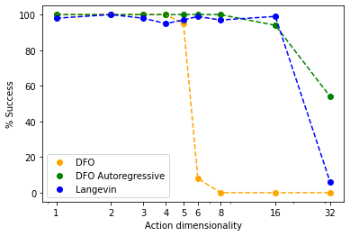
이러한 방법들 간의 핵심적인 비교는 고차원 행동 공간에 대한 단순성과의 트레이드오프이다. 그림 11에서 볼 수 있듯이, 차원 입자 환경에서 단 2,000개의 데모만 주어졌을 때, 공동 차원 최적화 무미분 버전(Sec. B.1)은 차원의 저주와 단순한 샘플링으로 인해 5차원을 넘어서는 환경을 해결하지 못한다. 자기회귀 버전(Sec. B.2)과 랑제빈 버전(Sec. B.3) 모두 16차원까지 안정적으로 환경을 해결할 수 있으며, 32차원에서도 0이 아닌 성공률을 보인다. 자기회귀 버전은 새로운 그래디언트 안정화가 필요하지 않으며 동일한 손실 함수 만 사용할 수 있지만, 메모리 집약적이며 차원에 대해 개의 개별 모델이 필요하다. 랑제빈 버전은 단 하나의 모델로 고차원까지 확장 가능하지만 그래디언트 안정화가 필요하다. 자기회귀 및 랑제빈 생성형 EBM에 대한 자세한 내용은 [64] 및 [12, 37]을 참조하라. 각 평가 작업에 어떤 변형이 사용되었는지는 섹션 D에 나열되어 있다.
부록 C 추가적인 실험 세부 정보 및 분석
C.1 작업별 데모 개수 및 환경 차원 수 요약
본 섹션에서는 아래 표를 통해 평가된 다양한 정책 학습 실험 작업의 핵심 측면, 구체적으로 각 작업의 데모 개수와 환경의 차원 수(관측 공간, 상태 공간, 행동 공간으로 구성됨)를 강조한다. 표에서 강조된 바와 같이, 다양한 작업들은 데이터 부족 상황(low-data-regime) 작업, 높은 관측, 상태 및/또는 행동 차원을 가진 작업을 포함하여 광범위한 도전 과제들을 다룬다.
| Demonstrations | Dimensionalities | ||||||
|---|---|---|---|---|---|---|---|
| Domain | Task Name | # | Observations | States | Actions | Results Shown In | Comment |
| D4RL Human-Experts | kitchen-complete | 19 | 60 | 60 | 9 | Table 2 | |
| kitchen-partial | 601 | 60 | 60 | 9 | |||
| kitchen-mixed | 601 | 60 | 60 | 9 | |||
| pen-human | 50 | 45 | 45 | 24 | |||
| hammer-human | 25 | 46 | 46 | 26 | |||
| door-human | 25 | 39 | 39 | 28 | |||
| relocate-human | 25 | 39 | 39 | 30 | |||
| Particle Integrator | "1D"-Particle | 2,000 | 4 | 4 | 1 | Figure 6 | |
| "2D"-Particle | 2,000 | 8 | 8 | 2 | |||
| "3D"-Particle | 2,000 | 12 | 12 | 3 | |||
| "4D"-Particle | 2,000 | 16 | 16 | 4 | |||
| "5D"-Particle | 2,000 | 20 | 20 | 5 | |||
| "6D"-Particle | 2,000 | 24 | 24 | 6 | |||
| "8D"-Particle | 2,000 | 32 | 32 | 8 | |||
| "16D"-Particle | 2,000 | 64 | 64 | 16 | |||
| "32D"-Particle | 2,000 | 128 | 128 | 32 | |||
| Simulated Pushing | Single Target, States | 2,000 | 10 | 10 | 2 | Table 3 | |
| Multi Target, States | 2,000 | 13 | 13 | 2 | |||
| Single Target, Pixels | 2,000 | 129,600 | 10 | 2 | 180x240x3 image | ||
| Planar Sweeping | Image input | 50 | 27,648 | 203 | 3 | Table 4 | 96x96x3 image |
| State input | 50 | 203 | 203 | 3 | |||
| Bi-Manual Sweeping | Image-and-state input | 1,000 | 27,660 | 372 | 12 | Table 5 | 96x96x3 image |
| Real Robot | Push-Red-Then-Green | 95 | 32,400 | 8 | 2 | Table 6 | 90x120x3 image. |
| Push-Red/Green-Multimodal | 410 | 32,400 | 8 | 2 | |||
| Insert-Blue | 223 | 32,400 | 8 | 2 | |||
| Sort-Blue-From-Yellow | 502 | 32,400 | 26 | 2 | |||
C.2 훈련 및 추론 시간, 암시적(Implicit) 대 명시적(Explicit) 비교
D4RL 훈련+평가 시간. 표 6은 D4RL 작업에서 선택된 가장 성능이 좋은 모델들의 예시 훈련 + 평가 시간을 비교한다. 초당 훈련 단계(steps/second)와 실험을 실행하는 데 걸리는 전체 시간을 모두 보고하며, 이는 10k 단계마다 100개의 에피소드를 간헐적으로 평가하면서 100k 단계까지 훈련하는 과정을 포함한다.
| Implicit BC | Explicit BC | Comment | |
| Configuration | As in Section D.1 | As in Section D.1 | |
| Summary: | 512 batch size | 512 batch size | |
| 512x8 MLP | 2048x8 MLP | ||
| 100 Langevin iterations | |||
| 8 counter examples | |||
| Device | TPUv3 | TPUv3 | |
| Task | door-human-v0 | door-human-v0 | |
| Training rate (steps/sec) | 17.9 | 101.3 | |
| Total train + eval time (hrs) | 3.4 | 0.66 | 100k train steps, 100 evals every 10k steps |
표 6에서 볼 수 있듯이, 가장 성능이 좋은 암시적 모델(100회 반복 랑제빈 모델)은 가장 성능이 좋은 명시적 모델에 비해 훈련+평가 시간이 5.6배 더 걸린다. 암시적 모델의 전체 훈련+평가 시간인 3.4시간조차도, 비교 가능한 D4RL 작업에서 CQL에 대한 훈련+평가를 완료하는 데 걸리는 시간으로 보고된 [15]의 16.3시간보다 상당히 빠르다는 점에 주목하라.
실제 환경 이미지 기반 훈련 및 추론 시간. 다음은 실제 환경 작업에 대한 관련 훈련 및 추론 시간을 비교한다. 위에서 논의한 D4RL 시나리오와 달리, 이 시나리오에서는 (a) 처리해야 할 대용량 이미지 관측이 존재하고, (b) 훈련 중에 시뮬레이션 평가를 실행하지 않는다. 초당 훈련 단계 비율과 8개의 GPU 서버에서 수행되는 총 훈련 시간을 보고한다. 훈련이 완료되면 모델은 단일 GPU 머신에 배포되며, 이에 대한 추론 시간을 보고한다.
| Implicit BC | Explicit BC | Comment | |
| Configuration | As in Section D.5 | As in Section D.5 | |
| Summary: | 128 batch size | 128 batch size | |
| 90x120 images | 90x120 images | ||
| 4-layer ConvMaxPool | 4-layer ConvMaxPool | ||
| 1024x4 MLP | 1024x4 MLP | ||
| 256 counter examples | |||
| Training Device | 8x V100 GPU | 8x V100 GPU | |
| Task | Push-Red-Then-Green | Push-Red-Then-Green | |
| Training rate (steps/sec) | 4.7 | 5.5 | |
| Total train time (hrs) | 5.0 | 5.8 | 100k train steps |
| Inference Device | 1x RTX 2080 Ti GPU | 1x RTX 2080 Ti GPU | |
| Inference parameters | 1024 samples | ||
| 3 dfo iterations | |||
| Inference time (ms) | 7.22 | 3.49 |
표 7은 이러한 시각적 모델들의 경우, 암시적 모델과 명시적 모델의 훈련 시간이 각각 5.0시간과 5.8시간으로 상당히 유사함을 보여준다. 이전 D4RL 시나리오와 비교했을 때, 이는 훈련 시간의 대부분이 시각적 처리에 의해 지배되기 때문으로 설명할 수 있다. 암시적 모델은 후기 융합(late fusion, Sec. E)을 사용하므로 시각적 처리 시간이 명시적 모델과 동일하다. 추론의 경우, 선택된 암시적 모델은 명시적 모델의 3.49밀리초(ms)에서 최대 7.22ms로 추론 시간이 약간 증가하는 것을 보여준다. 이는 반복적인 무미분 최적화에 소요되는 시간 때문이다. 암시적 모델의 추론 시간은 샘플 수와 반복 횟수를 늘리거나 줄임으로써 조정할 수 있다. 예를 들어, 동일하게 훈련된 모델을 사용하되 샘플 수를 1024개에서 2048개로 늘리면 추론 시간이 9.25ms로 증가한다.
C.3 추가적인 실제 환경 실험 세부 정보
C.3.1 로봇 하드웨어 구성, 작업 공간 및 물체
본 실제 환경 실험에서는 모든 상태가 100Hz로 기록되는 UFACTORY xArm6 로봇 팔을 사용한다. 관측은 Intel RealSense D415 카메라로부터 640x360 해상도의 RGB 전용 이미지를 사용하여 30Hz로 기록된다. 원통형 말단 장치(end-effector)는 McMaster-Carr(9173K515)에서 조달한 6인치 길이의 플라스틱 PVC 파이프로 제작되었다. 작업 표면은 24 x 18인치 크기의 매끄러운 나무 도마이다. 조작 대상 물체는 Play22 아기 블록 도형 맞추기 장난감 키트(Play22)의 제품이다. 작업의 목표물들은 나무로 수작업 제작한 후 검은색으로 스프레이 도색하였다. 모든 데모는 실시간 데모 제공을 위한 마우스 기반 인터페이스를 통해 제공되었다.
6자유도(6DOF) 로봇은 테이블 위의 2D 평면에서만 움직이도록 제한된다. 이는 작동 중 로봇이 테이블과 충돌하지 않도록 제한되고, 테이블 아래 방향으로 물체에 수직력을 가할 수 없기 때문에 로봇의 안전에 도움이 된다.
C.3.2 로봇 정책 및 제어기
학습된 시각 피드백 정책은 5 Hz로 동작한다. GTX 2080 Ti GPU에서 암시적 모델(Sec. D.5의 구성)은 10 ms 미만으로 추론을 완료하며(Sec. C.2 참조), 따라서 5 Hz보다 빠르게 실행될 수 있지만, 본 연구에서는 5 Hz로도 충분함을 확인하였다. 학습된 행동 공간은 이전 목표치(setpoint)에서 새로운 목표치로의 델타 데카르트(delta Cartesian) 목표치이다. 목표치들은 관절 수준 제어기(joint level controller)로 전달되기 위해 5 Hz 속도에서 100 Hz 목표치로 선형 보간된다. 관절 수준 제어기는 역운동학(inverse kinematics)을 위해 PyBullet [29]을 사용하며, 100 Hz로 xArm6 로봇에 관절 위치를 전송한다.
C.4 최근접 이웃(Nearest-Neighbor) 베이스라인
이 베이스라인은 모든 학습 데이터를 암기하고, 학습 세트에서 가장 가까운 관측을 찾아 대응하는 행동을 반환함으로써 추론을 수행한다. 구체적으로, 쌍 의 유한한 학습 데이터셋이 주어졌을 때, 입력을 , 출력을 로 나타내며, 과 모두에서 순서를 유지한다. 새로운 관측 가 주어지면, 최근접 이웃 모델 은 다음과 같이 계산한다:
어떤 노름(norm) 에 대해 계산한다. 구체적으로 본 연구에서는 L2 노름을 사용하였다. 모든 관측을 차원별로 단위 분산이 되도록 정규화하는 실험도 시도했으나, 결과가 개선되지는 않았다. 상태 전용 관측(이미지 없음)을 사용하는 환경의 경우, 프로세서 메모리 내에서 이를 정확하고 빠르게 모두 계산할 수 있지만, 본 연구에서 테스트한 이미지 관측 기반의 시뮬레이션 푸싱(Simulated Pushing) 작업의 경우 데이터셋이 메모리에 들어가지 않았다. 이에 따라, 관측 공간에서 128차원 벡터로의 무작위 선형 투영(이미지 데이터의 최근접 이웃 검색에 유효한 방법으로 알려진 [67])을 사용하였다. 그런 다음 이 128차원 벡터들을 모두 메모리에 저장하고, 이를 최근접 이웃 검색에 사용하였다.
C.5 차원 입자 환경 설명
이 환경에서 에이전트(즉, 입자)는 현재 구성 에서 목표 구성 로 이동한 다음, 두 번째 목표 구성 로 이동한다. 입자의 위치 과 속도 가 주어졌을 때, 에이전트의 행동은 PD 제어기에 적용되는 목표 위치 이며, PD 제어기는 다음 식에 따라 가속도 을 계산한다: 여기서 목표 속도는 이고, 와 은 환경에 고정된 상수 이득(gain)이다. 초기 및 목표 입자 구성은 각 에피소드마다 각 차원에 대해 범위 내에서 무작위로 지정되며, 학습과 테스트 간에 서로 다르다. 데모를 생성하기 위해, 스크립트 정책은 에이전트가 의 반경 이내에 들어올 때까지 행동 를 반환하고, 그 후 에이전트가 의 반경 이내에 들어올 때까지 행동 를 반환한다. 에이전트 상태와 목표 위치는 정책의 입력으로 사용되며, 정책은 스크립트 정책의 행동을 모방하도록 학습되고 새로운 목표 구성으로 일반화하는 능력에 대해 테스트된다. 이 작업은 복합 에러(compounding errors)를 다루면서 차원 계단 함수(step function)를 모델링하는 것으로 생각할 수 있다. 목표 간의 모드 전환은 학습되어야 하는 불연속성을 나타낸다.
C.6 분석: 차원 입자 작업에서의 학습 데이터 희소성
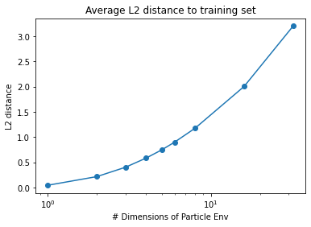
일반화, 샘플 효율성(sample complexity), 보간/외삽(interpolation/extrapolation)에 대한 다른 분석들을 보완하기 위해, 그림 12에서는 일반화의 또 다른 개념인 학습 데이터 희소성을 분석한다. 차원 입자 실험에서, N을 증가시키되 데모의 개수를 일정하게 유지하면, 학습 데이터는 관측 공간 전체에 걸쳐 사실상 훨씬 더 희소해진다. 이에 따라 평가를 위한 새로운 테스트 시간 환경은 가 증가함에 따라 평균적으로 학습 세트에서 점점 더 멀어지게 된다. 이는 최근접 이웃 베이스라인이 1차원을 넘어서는 이 작업을 잘 해결하지 못하는 이유를 설명하는 데 도움이 된다. 학습 데이터를 암기하는 것만으로는 불충분하며, 더 높은 차원의 환경에서 성공하려면 모델이 일반화되어야 하기 때문이다. 이 분석은 외삽/보간에 대한 본문의 단순한 1D->1D 그림(본문의 그림 2 및 그림 3)과 시각적 일반화 및 샘플 효율성 분석(본문의 그림 4)을 보완한다.
C.7 추가 D4RL 작업
본문에서는 D4RL의 인간 전문가 작업에 초점을 맞추었으나, 여기서는 추가적인 D4RL 작업에 대한 결과도 제공한다. 'random'을 제외하고 표시된 다른 작업들은 강화학습으로 학습된 에이전트를 사용하며, 이 강화학습 에이전트 자체는 단봉형(uni-modal) 연속이자 명시적인 함수 근사기인 정책을 가지고 있으며 그렇게 최적화되었다는 점에 유의해야 한다. 또한 예상대로, 제공된 데모로부터 추가적인 보상 정보를 활용하지 않는 지도 모방 학습(supervised imitation learning) 방법들은 최적이 아닌(sub-optimal) 데모가 포함된 작업에서 상대적으로 성능이 저하된다. 이는 작업 이름에 "*medium*" 및 "*random*"이 포함된 모든 작업에 해당된다. 또한 섹션 D에서 언급했듯이, 본 연구에서는 "Gym"-mujoco 작업에서의 성능 저하를 감수하고 인간 전문가 기반 환경("Franka" 및 "Adroit" 작업)에서의 성능을 극대화하도록 EBM 하이퍼파라미터를 선택하였다. 그러나 다른 방법들과의 공정한 비교를 위해, 그리고 표준 D4RL 평가 프로토콜에 따라, 각 환경을 극대화하는 결과를 제시하기보다는 모든 작업에 대해 단일 하이퍼파라미터 세트를 사용하였다.
| Baselines | Ours | |||||||
| Explicit | Implicit | Explicit | Implicit | |||||
| Method | BC | CQL [26] | S4RL [27] | BC (MSE) | BC (EBM) | BC (MSE) | BC (EBM) | |
| (from CQL) | w/ RWR [28] | w/ RWR [28] | ||||||
| Uses data | ||||||||
| Domain | Task Name | |||||||
| Franka | kitchen-complete | 1.4 | 1.8 | 3.08 | 1.76 0.04 | 3.37 0.19 | 1.22 0.18 | 3.37 0.01 |
| kitchen-partial | 1.4 | 1.9 | 2.99 | 1.69 0.02 | 1.45 0.35 | 1.86 0.26 | 2.18 0.05 | |
| kitchen-mixed | 1.9 | 2.0 | 2.15 0.06 | 1.51 0.39 | 2.03 0.06 | 2.25 0.14 | ||
| Adroit | pen-human | 1121.9 | 1214.0 | 1419.6 | 2141 109 | 2586 65 | 2108 58.8 | 2446 207 |
| hammer-human | -82.4 | 300.2 | 496.2 | -38 25 | -133 26 | -35.1 45.1 | -9.3 45.5 | |
| door-human | -41.7 | 234.3 | 736.5 | 79 15 | 361 67 | 17.9 13.8 | 399 34 | |
| relocate-human | -5.6 | 2.0 | 2.1 | -3.5 1.1 | -0.1 2.4 | -3.7 0.3 | ||
| Gym | halfcheetah-medium | 4202 | 5232 | 5778 | 4273 | 4086 | ||
| walker2d-medium | 304 | 3637 | 4298 | 822 | 676 | |||
| hopper-medium | 923 | 1867 | 2548 | 966 | 2430 | |||
| halfcheetah-medium-replay | 4934 | 6101 | 4029 | 2766 | ||||
| walker2d-medium-replay | 970 | 1392 | 480 | 433 | ||||
| hopper-medium-replay | 940 | 1132 | 543 | 382 | ||||
| halfcheetah-medium-expert | 4164 | 7467 | 9528 | 11758 | 4040 | |||
| walker2d-medium-expert | 520 | 4533 | 5152 | 640 | 745 | |||
| hopper-medium-expert | 3621 | 3592 | 3674 | 909 | 876 | |||
| halfcheetah-expert | 13004 | 12731 | 12802 | 9436 | ||||
| walker2d-expert | 5772 | 7067 | 2677 | 3746 | ||||
| hopper-expert | 3527 | 3557 | 3619 | 3549 | ||||
| halfcheetah-random | -118 | 4115 | 6213 | 0 | -392 | |||
| walker2d-random | 33 | 323 | 1145 | 145 | -1.63 | |||
| hopper-random | 308 | 331 | 331 | 284 | 308 | |||
부록 D 정책 학습 결과 개요 및 프로토콜
아래의 각 섹션에서는 개별 시뮬레이션 실험에 대한 프로토콜을 설명한다. 그림 5는 각 도메인의 다양한 작업에 걸쳐 해당 도메인 내 각 유형별 최적 정책의 성능을 평균하여 생성되었음에 유의한다.
어떤 작업에 어떤 EBM 변형이 사용되었는지에 대하여: 행동 차원이 2인 시뮬레이션 푸싱(Simulated Pushing) 및 실제 세계(Real World) 작업에서는 무작위 탐색 기반 최적화(derivative-free optimization)(Sec. B.1)를 사용하였다. 행동 차원이 3인 평면 쓸기(Planar Sweeping)와 행동 차원이 12인 양손 쓸기(Bi-Manual Sweeping)에서는 자기회귀 무작위 탐색 기반 최적화(autoregressive derivative-free optimization)(Sec. B.2)를 사용하였다. 행동 차원이 3에서 30 사이인 D4RL에서는 랑제뱅 역학(Langevin dynamics)(Sec. B.3)을 사용하였다. 행동 차원이 1에서 32 사이인 입자(Particle) 작업에서도 마찬가지로 랑제뱅 역학을 사용하였다. 변형들의 비교는 Sec. B.4을 참조한다.
D.1 D4RL 실험
D4RL 실험의 경우, 암시적 BC(EBM) 및 명시적 MSE-BC 모델 모두에 대해 여러 하이퍼파라미터에 걸쳐 스윕(sweep)을 실행한다. 본 연구에서는 hammer-human-v0, door-human-v0, relocate-human-v0의 3가지 D4RL 환경에서 최대 평균 성능을 기준으로 최종 하이퍼파라미터를 선택한다. 최종 결과 도출을 위해 모든 D4RL 작업에 동일한 최종 하이퍼파라미터를 사용한다. D4RL의 단일 하이퍼파라미터 세트를 선택할 때 인간 원격 조작(human-teleoperation) 작업 성능에 가장 세심한 주의를 기울였으며, 특히 이로 인해 gym-mujoco D4RL 작업에서의 성능은 약간 낮아졌음에 유의한다. 모든 평가에 대해 3개의 시드에 대한 100개 에피소드의 평균 결과를 보고한다. 본문 그림 5의 종합 D4RL 성능 지표인 "D4RL Human-Experts"를 계산하기 위해, 먼저 kitchen-complete, kitchen-partial, kitchen-mixed, pen-human, hammer-human, door-human, relocate-human 환경에 대한 정규화된 성능 지표를 계산한 다음, 이 모든 작업에 대한 평균을 계산하였다.
D4RL 평가에는 다음 하이퍼파라미터가 사용되었다:
D4RL 암시적 BC (EBM)
| Hyperparameter | Chosen Value | Swept Values |
|---|---|---|
| EBM variant | Langevin | |
| train iterations | 100,000 | |
| batch size | 512 | |
| learning rate | 0.0005 | |
| learning rate decay | 0.99 | |
| learning rate decay steps | 100 | |
| network size (width x depth) | 512x8 | 128x32, 512x8 |
| activation | ReLU | swish, ReLU |
| dense layer type | spectral norm | regular, spectral norm |
| train counter examples | 8 | 1, 8, 64 |
| action boundary buffer | 0.05 | 0.001, 0.05 |
| gradient penalty | final step only | all steps, final step only |
| gradient margin | 1 | 0.6, 1.0, 1.3 |
| langevin iterations | 100 | 100, 150 |
| langevin learning rate init. | 0.5 | 2.0, 1.0, 0.5, 0.1 |
| langevin learning rate final | 1.00E-05 | 1e-4, 1e-5, 1e-6 |
| langevin polynomial decay power | 2 | 2.0, 1.0 |
| langevin delta action clip | 0.5 | 0.05, 0.1, 0.5 |
| langevin noise scale | 0.5 | 0.5, 1.0 |
| langevin 2nd iteration learning rate | 1.00E-05 | 1e-1, 1e-2, 1e-5 |
pen 태스크에 대해 5개의 서로 다른 시드(seed) 전체에서 나타난 학습 안정성의 지표도 함께 표시된다.
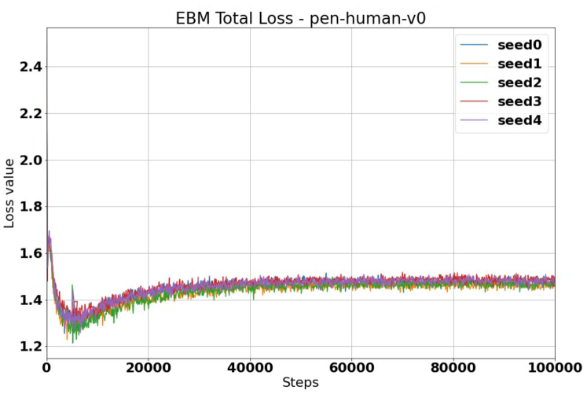
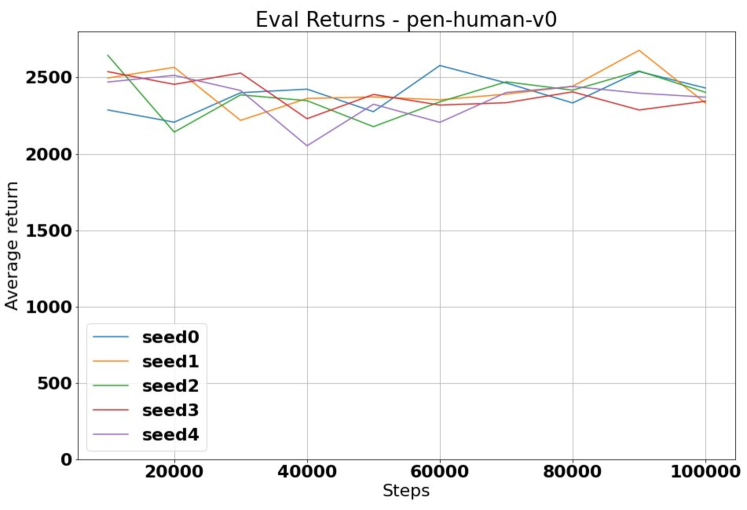
D4RL 명시적 MSE-BC
| Hyperparameter | Chosen Value | Swept Values |
|---|---|---|
| train iterations | 100,000 | |
| batch size | 512 | |
| sequence length | 2 | |
| learning rate | 0.001 | 1e-3, 0.5e-3 |
| learning rate decay | 0.99 | |
| learning rate decay steps | 200 | |
| dropout rate | 0.1 | 0.0, 0.1 |
| network size (width x depth) | 2048x8 | 128x16, 128x32, 512x16, 512x32, 1024x4, 1024x8, 2048x4, 2048x8 |
| activation | ReLU |
D.2 시뮬레이션된 푸싱(Pushing) 실험
시뮬레이션된 푸싱(Simulated Pushing) 실험의 경우, 태스크의 상태(States) 및 픽셀(Pixels) 버전 각각에 대해 각 모델별로 별도의 스윕(sweep)을 실행한다. 선택된 모든 하이퍼파라미터 스윕과 선택된 값은 아래 표에 제시되어 있으며, 결과는 3개 시드에 대한 100개 에피소드의 평균으로 보고된다.
시뮬레이션된 푸싱, 상태(States), 암시적 BC (EBM)
| Hyperparameter | Chosen Value | Swept Values |
|---|---|---|
| EBM variant | DFO | |
| train iterations | 100,000 | |
| batch size | 512 | |
| sequence length | 2 | 2, 4 |
| learning rate | 0.001 | |
| learning rate decay | 0.99 | |
| learning rate decay steps | 100 | |
| network size (width x depth) | 128x8 | 2048x4, 128x8, 128x16, 128x32 |
| activation | ReLU | |
| dense layer type | regular | |
| train counter examples | 256 | |
| action boundary buffer | 0.05 | |
| gradient penalty | none | |
| dfo samples | 16384 | |
| dfo iterations | 3 |
시뮬레이션된 푸싱, 상태(States), 명시적 MSE-BC
| Hyperparameter | Chosen Value | Swept Values |
|---|---|---|
| train iterations | 100,000 | |
| batch size | 512 | |
| sequence length | 2 | |
| learning rate | 0.0005 | 4e-3, 2e-3, 1e-3, 0.5e-3, 0.2e-3 |
| learning rate decay | 0.99 | |
| learning rate decay steps | 100 | 100, 150, 200, 400 |
| dropout rate | 0.1 | |
| network size (width x depth) | 1024x8 | 1024x4, 1024x8, 2048x4, 2048x8 |
| activation | ReLU |
시뮬레이션된 푸싱, 상태(States), 명시적 MDN-BC
| Hyperparameter | Chosen Value | Swept Values |
|---|---|---|
| train iterations | 100,000 | |
| batch size | 512 | |
| sequence length | 2 | |
| learning rate | 0.001 | |
| learning rate decay | 0.99 | |
| learning rate decay steps | 100 | |
| dropout rate | 0.1 | |
| network size (width x depth) | 512x8 | 512x8, 512x16 |
| training temperature | 1.0 | 0.5, 1.0, 2.0 |
| test temperature | 1.0 | 0.5, 1.0, 2.0 |
| test variance exponent | 1.0 | 1.0, 4.0 |
시뮬레이션된 푸싱, 픽셀(Pixels), 암시적 BC (EBM)
| Hyperparameter | Chosen Value | Swept Values |
|---|---|---|
| EBM variant | DFO | |
| train iterations | 100,000 | |
| batch size | 128 | 128, 256 |
| sequence length | 2 | |
| learning rate | 0.001 | |
| learning rate decay | 0.99 | |
| learning rate decay steps | 100 | |
| image size | 240x180 | 120x90, 240x180 |
| MLP network size (width x depth) | 1024x4 | 512x4, 1024x4, 256x14, 256x26, 1024x14, 1024x26 |
| Conv. Net. | 4-layer ConvMaxPool | |
| activation | ReLU | |
| dense layer type | regular | |
| train counter examples | 256 | |
| action boundary buffer | 0.05 | |
| gradient penalty | none | |
| dfo samples | 4096 | 1024, 4096, 16384 |
| dfo iterations | 3 |
시뮬레이션된 푸싱 픽셀(Pixels) MSE-BC
| Hyperparameter | Chosen Value | Swept Values |
|---|---|---|
| train iterations | 100,000 | |
| batch size | 64 | |
| sequence length | 2 | |
| learning rate | 0.001 | |
| learning rate decay | 0.99 | |
| learning rate decay steps | 100 | |
| image size | 240x180 | 120x90, 240x180 |
| dropout rate (MLP only) | 0.1 | |
| network size (width x depth) | 512x4 | 128x2, 128x4, 512x2, 512x4 |
| Conv. Net. | 4-layer ConvMaxPool | |
| activation | ReLU | |
| coord conv | True | True, False |
시뮬레이션된 푸싱 픽셀(Pixels) MDN-BC
| Hyperparameter | Chosen Value | Swept Values |
|---|---|---|
| train iterations | 100,000 | |
| batch size | 32 | |
| sequence length | 2 | |
| learning rate | 0.001 | |
| learning rate decay | 0.99 | |
| learning rate decay steps | 100 | |
| dropout rate (MLP only) | 0.1 | |
| image size | 120x90 | 120x90, 240x180 |
| network num components | 26 | |
| network size (width x depth) | 512x8 | 512x8, 512x16 |
| Conv. Net. | 4-layer ConvMaxPool | |
| activation | ReLU | |
| training temperature | 2.0 | 0.5, 1.0, 2.0 |
| test temperature | 2.0 | 0.5, 1.0, 2.0 |
| test variance exponent | 4.0 | 1.0, 4.0 |
D.3 시뮬레이션된 차원 입자 환경 실험
이 환경과 그 동역학(dynamics)에 대한 자세한 설명은 섹션 C.5을 참조한다. 이 환경에서의 평가를 위해 다음 하이퍼파라미터를 사용했다:
입자(Particle) 암시적 BC (EBM)
| Hyperparameter | Chosen Value |
|---|---|
| EBM variant | Langevin |
| train iterations | 50,000 |
| batch size | 128 |
| sequence length | 2 |
| learning rate | 0.001 |
| learning rate decay | 0.99 |
| learning rate decay steps | 100 |
| network size (width x depth) | 128x16 |
| activation | ReLU |
| dense layer type | spectral norm |
| train counter examples | 64 |
| gradient penalty | final step only |
| gradient margin | 1 |
| langevin iterations | 50 |
| langevin learning rate init. | 0.1 |
| langevin learning rate final | 1.00E-05 |
| langevin polynomial decay power | 2 |
| langevin delta action clip | 0.1 |
| langevin noise scale | 1.0 |
| langevin 2nd iteration learning rate | not used |
입자(Particle) 명시적 MSE-BC
| Hyperparameter | Chosen Value |
|---|---|
| train iterations | 100,000 |
| batch size | 512 |
| sequence length | 2 |
| learning rate | 0.001 |
| learning rate decay | 0.99 |
| learning rate decay steps | 200 |
| dropout rate | 0.1 |
| network size (width x depth) | 128x16 |
| activation | ReLU |
D.4 시뮬레이션된 쓸기(Sweeping) 실험
Planar Sweeping의 경우, 명시적(explicit) 모델과 암시적(implicit) 모델 모두에 대해 다양한 유형의 인코더와 표에 제시된 Dense ResNet 레이어의 다양한 (Sec. E)에 대한 결과가 표시되며, 각 결과는 3개의 서로 다른 시드(seed)에 걸쳐 각각 100회 평가한 평균값이다. 암시적 및 명시적 모델 각각에 대해 가장 우수한 모델을 Planar Sweeping에서 선정하여 Bi-Manual Sweeping에서 평가하였다.
시뮬레이션된 planar sweeping 및 bi-manual sweeping 환경에서의 평가를 위해 다음과 같은 하이퍼파라미터를 사용하였다:
Planar Sweeping 암시적 BC (EBM)
| Hyperparameter | Chosen Value | Swept Values |
|---|---|---|
| EBM variant | Autoregressive | |
| train iterations | 1,000,000 | |
| batch size | 64 | |
| sequence length | 2 | |
| learning rate | 1e-4 | 1e-3, 1e-4 |
| Conv. Net. | ConvResNet | |
| # encoder features | 64 | |
| # Conv ResNet encoder layers | 26 | |
| # spatial softmax heads | 64 | 8, 16, 32, 64 |
| # dense ResNet layers | 20 | 8, 14, 20 |
| activation | ReLU | |
| train counter examples per action dim | 1024 | 128, 256, 512, 1024 |
| inference examples per action dim | 1024 | 128, 256, 512, 1024 |
Planar Sweeping 명시적 MSE-BC
| Hyperparameter | Chosen Value | Swept Values |
|---|---|---|
| train iterations | 1,000,000 | |
| batch size | 64 | |
| sequence length | 2 | |
| learning rate | 1e-4 | 1e-3, 1e-4 |
| Conv. Net. | ConvResNet | |
| # encoder features | 64 | |
| # Conv ResNet encoder layers | 26 | |
| # spatial softmax heads | 64 | 8, 16, 32, 64 |
| # dense ResNet layers | 20 | 8, 14, 20 |
| activation | ReLU |
Bi-manual Sweeping 암시적 BC (EBM)
| Hyperparameter | Chosen Value |
|---|---|
| EBM variant | Autoregressive |
| train iterations | 1,000,000 |
| batch size | 32 |
| sequence length | 2 |
| learning rate | 1e-4 |
| Conv. Net. | ConvResNet |
| # encoder features | 64 |
| # Conv ResNet encoder layers | 26 |
| # spatial softmax heads | 64 |
| # dense ResNet layers | 20 |
| activation | ReLU |
| train counter examples per action dim | 1024 |
| inference examples per action dim | 1024 |
Bi-manual Sweeping 명시적 MSE-BC
| Hyperparameter | Chosen Value |
|---|---|
| train iterations | 1,000,000 |
| batch size | 32 |
| sequence length | 2 |
| learning rate | 1e-4 |
| Conv. Net. | ConvResNet |
| # encoder features | 64 |
| # Conv ResNet encoder layers | 26 |
| # spatial softmax heads | 64 |
| # dense ResNet layers | 20 |
| activation | ReLU |
D.5 실세계 푸싱(Pushing) 실험
Real World의 경우, 시뮬레이션 푸싱(Simulated Pushing, Pixels)에서 명시적 및 암시적 모델을 가져와 실세계에 적용하였다. 실세계 푸싱 환경에서의 평가를 위해 다음과 같은 하이퍼파라미터를 사용하였다:
실세계 태스크 픽셀(Pixels) 암시적 BC (EBM)
| Hyperparameter | Pushing | Pushing Multimodal | Insertion | Sorting |
|---|---|---|---|---|
| EBM variant | DFO | DFO | DFO | DFO |
| train iterations | 100,000 | 100,000 | 100,000 | 100,000 |
| batch size | 128 | 256 | 256 | 256 |
| sequence length | 2 | 2 | 2 | 2 |
| learning rate | 0.001 | 0.001 | 0.001 | 0.001 |
| learning rate decay | 0.99 | 0.99 | 0.99 | 0.99 |
| learning rate decay steps | 100 | 100 | 100 | 100 |
| image size | 120x90 | 120x90 | 120x90 | 120x90 |
| MLP network size (width x depth) | 1024x4 | 1024x4 | 2048x4 | 1024x4 |
| Conv. Net. | 4-layer ConvMaxPool | 4-layer ConvMaxPool | 4-layer ConvMaxPool | 4-layer ConvMaxPool |
| activation | ReLU | ReLU | ReLU | ReLU |
| dense layer type | regular | regular | regular | regular |
| train counter examples | 256 | 256 | 256 | 256 |
| action boundary buffer | 0.05 | 0.05 | 0.05 | 0.05 |
| gradient penalty | none | none | none | none |
| dfo samples | 1024 | 1024 | 2048 | 2048 |
| dfo iterations | 3 | 3 | 3 | 3 |
푸싱 픽셀(Pushing Pixels) MSE-BC
| Hyperparameter | Pushing | Pushing Multimodal | Insertion | Sorting |
|---|---|---|---|---|
| train iterations | 100,000 | 100,000 | 100,000 | 100,000 |
| batch size | 128 | 128 | 128 | 128 |
| sequence length | 2 | 2 | 2 | 2 |
| learning rate | 0.001 | 0.001 | 0.001 | 0.001 |
| learning rate decay | 0.99 | 0.99 | 0.99 | 0.99 |
| learning rate decay steps | 100 | 100 | 100 | 100 |
| image size | 120x90 | 120x90 | 120x90 | 120x90 |
| dropout rate (MLP only) | 0.1 | 0.1 | 0.1 | 0.1 |
| MLP network size (width x depth) | 512x4 | 1024x4 | 1024x4 | 1024x4 |
| Conv. Net. | 4-layer ConvMaxPool | 4-layer ConvMaxPool | 4-layer ConvMaxPool | 4-layer ConvMaxPool |
| activation | ReLU | ReLU | ReLU | ReLU |
Appendix E 모델 아키텍처
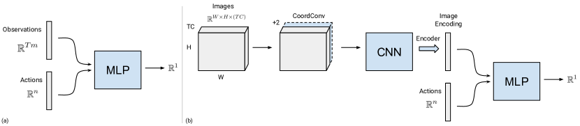
.
E.1 MLP
이미지가 아닌 관측 모델의 경우, MLP(Multi Layer Perceptrons)를 사용한다. 이는 EBM으로 사용될 때(Fig. 14a) 행동을 입력받아 의 에너지를 출력하고, MSE 모델로 학습될 때는 대신 행동을 출력한다. Swish 활성화 함수도 실험해 보았으나, 제시된 모든 결과에는 ReLU 활성화 함수를 사용하였다. 구성 가능한 모델 요소는 드롭아웃(Dropout) [68], ResNet 스킵 연결(skip connections) [69] 사용 여부, 그리고 일반 dense 레이어 대신 스펙트럴 정규화(spectral normalization) dense 레이어 [66] 사용 여부로 구성된다.
E.2 ConvMLP
시각운동 모델(Fig. 14b)의 경우, 일반적인 ConvMLP [24] 스타일의 아키텍처를 사용하지만, EBM으로 사용될 때는 CNN 모델의 이미지 인코딩과 행동을 결합(concatenate)한다. MLP 부분은 위의 섹션과 동일하다. CNN의 경우, sweeping 실험의 모든 모델에 대해 인코더 전단계에서 전체 이미지 공간 해상도를 유지하는 26-레이어 ResNet [70]("ConvResNets")을 사용하였다. 시뮬레이션 및 실세계 푸싱 실험의 경우, 맥스 풀링(max-pooling)과 합성곱(convolution)을 교차하여 공간적으로 점진적으로 축소되는 모델("ConvMaxPool")을 사용하였으며, 특징 차원은 [32, 64, 128, 256]이다. 두 모델 모두 3x3 합성곱 커널을 사용하였다. 구성 가능한 옵션에는 CoordConv [23](즉, 입력으로 증강된 픽셀 좌표 맵) 사용 여부와, 공간 소프트(arg)맥스(spatial soft (arg)max) [24] 또는 전역 평균 풀링(global average pooling) 인코더 중 하나의 선택이 포함된다.
Appendix F 증명
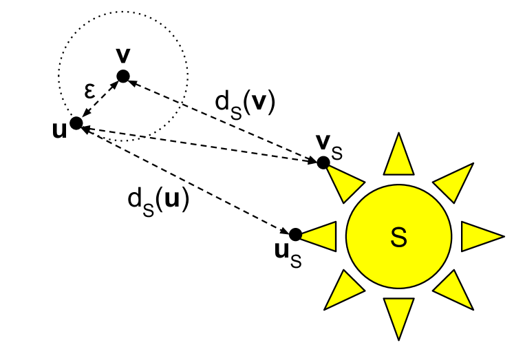
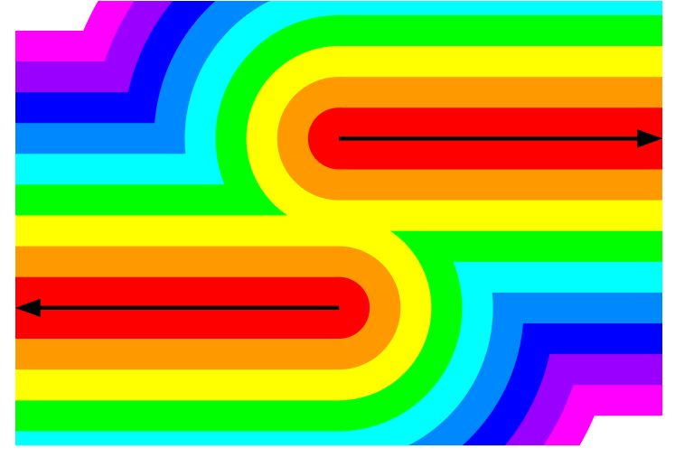
F.1 정의
모든 에 대해 를 만족하면, 함수 은 상수 을 갖는 립시츠 연속(Lipschitz continuous)이다. 우리는 가 -립시츠라고 말하며, 따라서 1-립시츠 함수는 립시츠 상수가 1인 연속 함수이다. -립시츠 함수의 그래디언트 크기는 항상 보다 작거나 같다.
점 에서 비어 있지 않은 집합 까지의 거리 함수(distance function)는 다음과 같이 정의된다:
닫힌 집합(closed set)은 자신의 모든 경계점(집합의 내부와 외부에서 접근할 수 있는 점)을 포함하는 집합이다. 동치로서, 어떤 집합이 닫힌 집합일 필요충분조건은 그 집합이 자신의 모든 극한점(집합 내의 어떤 점들의 수열의 극한이 되는 점)을 포함하는 것이다.
의 멱집합(power set) 은 공집합과 전체를 포함한 의 모든 부분집합의 집합이다.
함수 의 그래프(graph) 은 다음과 같은 점들의 집합이다:
다가 함수(multi-valued function) 의 그래프(graph) 은 다음과 같은 점들의 집합이다:
F.2 증명
보조정리 3.
임의의 점 에서 비어 있지 않은 집합 까지의 거리 함수는 잘 정의되며(well-defined) 1-립시츠(1-Lipschitz)이다.
증명.
점 에서 비어 있지 않은 집합 까지의 거리 함수는 다음과 같이 정의된다:
거리 값들의 집합은 양의 실수의 집합이므로, 의 완비성(completeness)에 의해 하한(infimum)이 존재한다. 따라서 거리 함수는 잘 정의된다.
임의의 에 대해, 을 만족하는 의 폐포(closure) 내의 한 점을 이라 하자. 그렇다면 삼각 부등식을 사용하여 연속성을 확립하기 위해, 으로부터 거리 만큼 떨어진 주어진 에 대해(그림 15(a)에 표시된 바와 같이) 다음과 같이 기술할 수 있다:
| is an infimum | ||||
| by the triangle inequality | ||||
| and can be exchanged. | ||||
과 은 서로 바뀔 수 있으므로 를 얻고, 따라서 은 립시츠 상수 1을 가지며 에서 연속이다. ∎
보조정리 4.
만약 이 닫힌 집합 에 대한 거리 함수라면, 모든 에 대해 를 만족하는 원소 이 존재한다.
증명.
를 중심으로 하고 반지름이 인 닫힌 볼(closed ball)을 이라 하자. 에서 까지의 거리는 에서 까지의 거리와 같다. 은 하한(infimum)으로 정의되므로, 극한이 이고 거리가 인 점들의 무한 수열 이 반드시 존재해야 한다. 집합 은 닫혀 있고 유계이므로, 따라서 콤팩트(compact)하다. 그러므로 무한 수열 는 어떤 점 으로 수렴하는 부분 수열을 적어도 하나 가져야 한다. 전체 수열의 거리가 로 수렴하므로, 우리는 임을 알 수 있다. ∎
보조정리 5.
임의의 연속 함수 에 대해, 의 그래프까지의 거리는 모든 에 대해 을 만족하는 연속 함수 이다.
증명.
점 에서 의 그래프까지의 에서의 거리를 이라 하자.
함수 의 그래프 은 다음과 같은 점들의 집합이다:
그래프 은 공집합이 아닌 집합이므로, 보조정리 3에서 보인 바와 같이 거리 함수 은 잘 정의되며 연속이다.
우리는 여전히 모든 에 대해 임을 보여야 한다. 이 거리 함수이므로 임을 알고 있다.
임의의 에 대해, 점 가 존재하므로 에서 의 한 점까지의 거리는 0이 되어, 명백히 이다.
이고 따라서 인 점 을 고려하자. 이 연속이므로 는 닫혀 있으며, 하한 을 달성하는 점 가 존재할 것이다.
적어도 또는 이므로, 이다.
따라서 임의의 에 대해, 은 에서 유일한 최솟값 를 달성하며, 따라서 이다. ∎
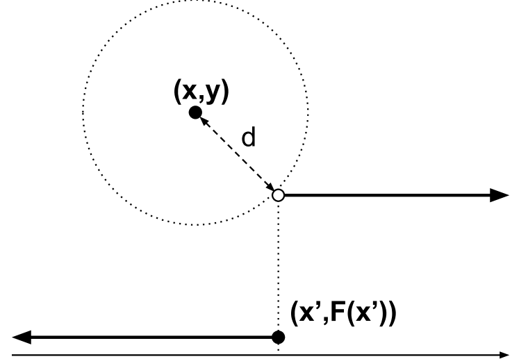
우리는 가 일가(single-valued) 함수이고 연속인 경우, 모든 에 대해 를 만족하는 연속 함수 을 에 대해 구성할 수 있음을 보였다. 그러나 우리가 모델링하려는 함수들은 종종 불연속적이거나 다가(multi-valued) 함수이다. 만약 일가 함수가 불연속적이라면, 그래프 상에 거리 함수를 최소화하는 점이 의 그래프에 포함되지 않는 열린 경계가 존재하게 된다 (그림 16(b)). 이 예시에서는 동일한 값에 대해 을 최소화하는 의 값이 두 개 존재하게 되며, 이 경우 은 일가 함수로서 잘 정의되지 않는다. 우리는 두 경우의 모호성을 해결하여 잘 정의된 을 얻을 수 있지만, 불연속점에서 원래의 를 신뢰성 있게 복원할 수는 없다.
불연속성과 다가 함수를 처리하기 위해, 우리는 여러 값 으로 매핑되는 함수를 허용하도록 정의를 확장할 것이다. 다가 함수 은 에서 공집합을 제외한 의 모든 부분집합의 집합인 멱집합(power set) 으로 매핑된다. 우리는 더 이상 연속성을 요구하지 않는 대신, 보조정리 5의 증명에 사용된 연속 함수의 한 가지 중요한 성질, 즉 의 그래프가 닫혀 있다는 성질을 직접 요구한다. 도약 불연속(jump discontinuity)의 단순한 경우(그림 16(b)과 같이), 함수는 불연속면의 양쪽을 모두 포함해야 한다.
정리 1.
의 그래프가 닫혀 있는 임의의 다가(set-valued) 함수 에 대하여, 모든 에 대해 을 만족하는 1-립시츠(1-Lipschitz) 함수 가 존재한다.
증명.
다가 함수 의 그래프 은 다음과 같은 점들의 집합이다:
우리는 다시 을 까지의 거리로 정의할 수 있다. 가 공집합이 아닌 집합이므로, 이 잘 정의되며 균등 연속(uniformly continuous)임을 알 수 있다 (보조정리 3).
이제 우리는 에 속하는 모든 점에 대해 이고, 에 속하지 않는 모든 점에 대해 임을 보일 것이다.
임의의 점 , 즉 이자 인 점에 대해, 에서 까지의 거리는 0이다.
임의의 점 , 즉 이자 인 점에 대해, 까지의 거리가 엄격히 양수(strictly positive)임을 보여야 한다. 그래프 가 닫혀 있으므로 (그렇게 가정했기 때문에), 보조정리 4에 의해 최소 거리를 정확히 달성하는 점 이 존재함을 알 수 있다.
또는 중 적어도 하나이므로, 이다.
공집합은 의 치역에서 제외되므로, 임의의 에 대해 적어도 하나의 이 존재할 것이다. 따라서, 에서 의 최솟값은 0이 되며 정확히 가 된다.
우리는 의 거동이 매우 나쁘더라도, 암시적 함수(implicit function) 이 잘 정의되고 연속이며 1의 립시츠 값을 가짐을 보였다. ∎
따름정리 1.1 정리 1의 함수 은 임의의 양의 립시츠 상수를 갖도록 선택될 수 있다.
증명.
임의의 점 에서 공집합이 아닌 집합 까지의 거리 함수 은 1의 립시츠 상수를 가진다 (보조정리 3). 를 의 그래프까지의 거리라고 하자. 원하는 립시츠 상수가 인 경우, 을 의 립시츠 상수를 갖는 다른 함수 과 합성하여 을 얻을 수 있다. 예를 들어, 이면 를 얻는다.
따라서, 은 의 립시츠 상수를 가진다. ∎
정리 2.
임의의 다가 함수 에 대하여, 임의로 작은 유계 오차 을 가지는 연속 함수 근사기(continuous function approximator) 를 갖는 연속 암시적 함수 이 존재하여, 의 그래프 상의 임의의 점이 의 그래프의 이내에 있음을 보장한다.
증명.
을 의 그래프까지의 거리의 2배라고 하자. 정리 1(Thm. 1)에 의해, 이 는 연속이며 을 만족한다.
임의의 에 대해, 을 유계 오차(bounded error) , 를 갖는 에 대한 함수 근사기(function approximator)라고 하자. 는 연속 함수이므로, 유계 오차 함수 근사기의 존재는 연속 함수의 보편적 근사(universal approximation)에 관한 잘 알려진 결과(예를 들어 [57])에 의해 보장된다.
이제 문제는 을 근사하는 의 유계 오차가 argmin과 합성될 때, 의 성질에 대해 어떠한 보장을 제공할 수 있는지 여부이다.
의 근사기로서의 은 유계되지 않을 수 있음에 유의하라. 의 거동이 나쁠 수 있기 때문이다. 이는 이 불연속성을 갖는 임의의 지점에서 증명될 수 있다. , , 이 서로 임의로 멀리 떨어진 값을 갖는다고 가정하자. 에서의 오차로 인해, 는 에 임의의 오차를 유입시키는 의 값을 찾을 수 있다.
이라 하자. 의 그래프 상의 임의의 점 에 대해, 우리는 임을 보일 수 있다. 를 의 임의의 점이라 하자. 이 의 그래프 상에 있으므로, 우리는 임을 안다. 유계 오차 를 고려하면, 우리는 임을 안다. 따라서 argmin은 다른 곳에서 달성될 수 있지만, 은 보다 큰 값을 가질 수 없다.
또한 이 의 근사기이기 때문에, 우리는 (의 그래프 상의 에 대해, 이며 따라서 임을 안다. 은 의 그래프까지의 거리의 2배이므로, 에서 의 그래프까지의 거리는 보다 작다.
따라서, 의 그래프 상의 임의의 점 은 의 그래프인 의 이내에 존재해야 한다.
이것이 대칭적이지 않음에 유의하라. 에 대해서는 그것이 연속이고 의 이내에 있다는 것 외에는 아무런 보장이 없다. 의 미세한 변화가 집합 에서 일부 값을 제거할 수 있으므로, 의 한 점은 로부터 임의로 멀어질 수 있다. ∎
부록 G 이론적 시사점 및 논의
정리 1과 2의 실질적인 시사점은 불연속성과 다중 모드성(multi-modality)을 보이는 로봇 정책 학습(policy learning)과 같은 실제 세계의 모델링 작업에 대해 여러 유리한 성질을 제공한다는 점이다. 우선, 암시적 함수(implicit function)는 함수 근사기에서 큰 그래디언트(gradient) 없이도 가파르거나 불연속적인 오라클 정책(oracle policy)을 모델링할 수 있다. 우리는 이것이 도메인 외(out-of-domain) 샘플에 대해 더 나은 안정성 특성과 더 적은 일반화 문제를 갖는 정책으로 이어진다고 가설을 세운다. 정리 1은 또한 암시적 모델이 불연속성을 가진 함수를 포함하여 다가(multi-valued, 집합값) 함수를 표현할 수 있음을 보여준다. 정리 2를 통해서는 함수 근사기에 예상되는 오차가 있음에도 불구하고 암시적 추론(implicit inference)의 출력에 대해 여전히 보장을 가질 수 있다는 개념이 제공된다. 이 보장을 고려하는 한 가지 방법은 본 논문의 그림 10에 나타난 것처럼 함수의 등고집합(level set)을 통한 것이다. 설명하기 쉬운 예시를 들어 논의하자면, 단순한 계단 함수 불연속성(그림 10과 같이)에 대해 이 보장은 불연속성의 정확한 "결정 경계(decision boundary)"가 완벽하게 표현되지 않을 수는 있지만, 그 결정 경계가 임의의 정밀도로 근사될 수 있음을 보장한다. 나아가 결정 경계가 불완전하게 추정되더라도, 추론된 값들은 불연속성의 양쪽 중 한 곳에만 대응되며 그 외의 다른 곳에는 대응되지 않는다 (예를 들어, 불연속성의 양쪽 사이의 중간 어딘가의 값을 추정하지 않는다).
또한 정리 1과 2는 학습 알고리즘이 실제로 그러한 성질을 가진 모델을 찾아낼 수 있음을 보여주는 것이 아니라, 단지 그러한 모델이 존재한다는 것만을 보여준다는 점에 유의하라. 이는 신경망을 이용한 함수 근사에서의 다른 결과들(예를 들어 [57])과 일치한다. 추가적으로, 암시적 모델의 경우 또 다른 고려 사항은 이러한 매개변수화된 모델 의 매개변수 을 찾을 수 있는지 여부뿐만 아니라, 추론 시에 최적화 문제 을 해결할 수 있는지 여부이기도 하다. 일반적으로 는 비볼록(non-convex)할 것이며, 까다로운 전역 최적화 문제일 수 있다. 그러나 우리는 실제로 우리가 관심을 갖는 많은 정책 학습 작업에서 만족스러운 추론을 수행할 수 있음을 보여주었다.
부록 H 한계점
행동 복제(behavioral cloning) 방법으로서 평가했을 때 명시적(explicit) BC 정책 대비 암시적(implicit) BC 정책을 사용하여 여러 작업에서 성능 향상을 확인했으나, 몇 가지 한계점이 존재한다. 우선, 단순한 평균 제곱 오차(MSE) BC 정책과 비교하여 학습 및 추론 계산 비용이 모두 증가한다. 그러나 섹션 C.2에서 보여주었듯이, 실제 세계에서 사용되는 모델의 추론 시간 증가는 미미하며, 우리는 실제 세계에서 실시간 비전 기반 제어에 충분히 빠르도록 모델을 검증했다. 또한, 본 논문에서 제시된 모델의 학습 시간은 보고된 오프라인 RL 방법들의 수치(섹션 C.2)와 비교했을 때 미미한 수준이다. 두 번째 한계점은 명시적 모델에 비해 암시적 모델의 구현 복잡성이 증가한다는 점이다. 그러나 우리는 모델을 학습시키는 방법에 대한 가이드(섹션 B)를 제공하였으며, 이를 통해 독자들이 암시적 모델을 시도해 보기를 권장한다.